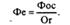
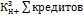

Билет
1. Социально-экономическая сущность и функции финансов. История.В основе сущ-ия человека лежит
процесс удовлетворения различных потребностей.Средством удов-ия потребностей
явл. блага. àПроизводство-это
деятельность людей, связанная с обеспечением матер-ых условий жизни
человека.Термин финансы появился в конце XIII
века в северных городах Италии и обозначал любой денежный платеж. В
далнешем понятие «финансы» стало употреблятся для обозначения системы ден.
Отношений между населением и государством. Общест.разделение труда привело к
воз-ию меновых отношений, а появление денег как эквивалента обмена стало
первопричиной формирования товарно-денежных отношений.Развитие эк.отношений в
обществе не может быть отграничено участием только гос-а и населения. В хоз-ой
деят-и принимают участие и др. эк. Агенты, кот. Также явл. субъектами
эк.отношений.Фин-ая деят-ть эк.агентов направлена на управление фондами
денежных средств,управление процессом их создания, распределения и
использования.
Совреме-ая.трактовка.Финансы-это
совок-ть эк. отношений, направленных на фор-ие, рапред-ие и испол-ие центра-ых
и децентр-ых фондов денежных средств, необходимых для выполнения задач и
функций гос-а или расширенного воспроизводства.
Финансы – это эк.отношения, которые обладаю рядом
признаков:1)финансы выступают в качестве ден.отношений, воз-их по поводу
образования, распределения, использования, перераспределения и накопления ден.
Средств 2)распред-ый характер ден.отношений связан с движпнием реальных денег
3)движение ден.средств имеет как правило односторонний характер4)фин.отношения
сущ. только на стадиях обмена и распределения воспроизводственного процесса
5)финансы как ден. Отношения имеют форму цен-ых и децен-ых денежных
средств6)финансы выступают в качестве необ-ого механизма воспроиз-ого процесса
7)финансы явл. одним из инструментов гос-ого управления,обеспеч-его выполнение
гос-ом его функций и задач.Категория
«финансы» и «деньги»-они не равны.Категория деньги возникла раньше чем
категория финансы.Основной прич-ой появ. Денег стало общ-ое разд-ие
труда.Деньги –это особый товар, всеобщий эквивалеент, кот.выражает стоимость
всех видов товаров, работ и услуг.Финансы возникли только с появл.
государственности.
Структура.Выд. публичные и частные
финансы.Публ.(централизованные) финансы-это системам эк. отношений, пред-ых для
выпо-ия задач и функций органов власти и местного самоуправления. Гос-ые
финансы вкл. в себя как финансы фед-ого, так и регионального уровней.Мун-ые финансы
выдел. В самостоят-ый структурный уровень.Частные(децентр-ые)-это система
организации ден-ых отношений, участниками которых явл.хоз-ие субъекты,
оршанизации, домохозяйства и отдельные граждане, то есть те эк.отношения, в
которых гос-о(муниципалитет) не явл. прямым участником.
Сущ-ть финансов раскр-ся в их функциях1)Распределительня(перераспределительная) функция Содержание данной
функции заключ-ся в том что финансы явл.системой отошений,которые вознк.в
процессе распределения.Форма осущ-ия данных отношений-фондовая,то есть эк.
отношения осущ-ся через фонды денежных средств, а следо-о,финансы
явл.инсрументомраспределения(перерасп-ия) денежных средств от одного эк-ого
агента к другому.Например, предприятиеàфонд оплаты трудаàработник.При помощи распр-ой (перерасп-ой)
функции происходит распределение НД среди различных эк. агентов:гос-а,
населения, хоз-их субъектов и др. Посредством расп-ой функции фор. Первичные
доходы(доходы возн-ие в сфере мат-ого производства), а при помощи перераспре-ой
функции-вторичные доходы(доходы организаци и лиц, не участ. В мат-ом
производстве)2)Контрольная функция.Реализуется
в процессе соблюдения фин-ой дисциплины.Фин.дисц.-это обязат-ыц для всех эк.
агентов порядок осущ-ия фин-ой деят-и, платежей и расчетов.3)РегулирующаяРассмтривают исходя из структуры финансов, из
деления их на частные и публичные.В рамках данного подхода выделяют:1)гос-ое
регулирование фин-ых отношений, то есть при помощи различных
фин.инструментов(напр.ставка %ЦБ)2)саморегулирование фин-ых отношений( вступая
в эк. отношения, агент само-овыбирает сферу деятельности, тех или иных
контрагентов,объемы и сроки выполнения фин-ых обязательств и т.д.
Обще-ое назначения финансов как эк-ой категории выр-ся в трех
функциях:формирование денежных фондов, использование денежных фондов,контроль.
Билет
2.Финансовые ресурсы и денежные фонды экономических субъектовФР Материа-ым воплощением
фин.отношений явл.ФР.ФР- это сов-тьвсех видов ден.средств,фин-ых активов, кот.
Располагает эк.субъект, это денежные доходы и нокаопления, формируемые
субъектами хоз-ия и гос-ом и предназнач. Для целей расширенного
воспроизводства, материального стимулирования, удов. Соц.потребностей и т.п.ФР
являются результатом взаимодействия поступления и расходов, распределения
ден-ых средств, их накопления и использования.ФП обр. в процессе производства
материальных ценностей при создании новой стоимости. В отличие от денежных ФР
находятся в распоряжении государства и суюъектов хоз-ия.Ден.ресурсы находятся в
руках граждан и испол-ся для обеспечения жизненных потребностей.
Стоимость
общественного продукта будет явл. источником ФР. При ее формировании участвуют
три составл-ие:стоимость ресурсов,сто-сть р.с и стомость вложенного капитала-àпо своей структуре
источники ФР состоят их трех элементов(Источники ФР=с+v+m):c-постоянная стоимость (плата за испол-ие
материальных ресурсов), v-необходимая
стомость (плата за использование трудовых ресурсов, m-прибавочная стоимость (плата за
использование капитала).Основным источником ФР на макро уровне :ВВП и НД.Источником
на микро уровне:выручка.Объем ФР связан с уровнем развития общ-ого
производства.ФР подр-ся на цен-ые и децен-ые.В зависимости от субъекта
отношений выделяют:ФР хоз-их субъектов, ФР государства, ФР муниципалитетов,ФР
страховых компаний
ФР фор-ся и испол-ся через механизм
денежных фондов.Денежные фонды-специально выделенные, относительно обособленные
части деежных средств, предназначенные для определенных ценей, выполняющих
определенную функцию. Например,денежные средства, выделенные на реализацию базовой
программы обя-ого мед-ого страхования, образуют Фонд обязательного мед-ого
страхования. Признаки Ден.фондов:1)строго целевой характер(например,
Пенсионный фонд России предназначен для фин-ия пенсионного обеспечения в
РФ)2)динамичный характер( постоянно поступают доходы и расходы)3)находится в
чей-либо соб-и(например, фонд оплаты труда принадлежит предприятию)
Специфической формой ФР считаются фин.резервы.Формирование фин.резервов
связано с тем, что общест. Производство нуждается в фин. Гарантиях своей беспередойности
при любых обстоятельствах.Главное отличие от ФР это нединамичный характер
использования то есть доходы могут поступать систематически, а расходы осущ-ся
только при наступлении определенных, заранее оговоренных, событий.Финансовые
резервы могут быть: бюджетные( например, средсства Резерв. фонда
Правительства РФ м.б испольованы на компенсацию ущерба пострадавшим в
результате крупных катастроф), страховые( ЮЛ(ФЛ) за отдельную плату
передает риск утраты имущ-ого интереса страховой компании, которая с свою
очередь за счет этих взносов формирует страховые резервы),золотовалютные
– данные активы выражены в виде золота и ин.валюты, нах.в соб-и государства и
используются для мак-ого регулирования, в том числе для валютных интервеций,
погашения дефицита платежного баланса и другие цели, резервные фонды хоз-их
субъектов-фор. Эк.агентом сомостоятельно для укрепления его
фин.устойчивости и платеджспособности
специальные резервные фонда некоторых министерств и ведомств( резервный
фонд Министерства транспорта РФ предназначен для обеспечения безопасного
функционирования трасп-ых систем и ликвидации последствий чрезвычацных ситуаций
в ьран-ом комплексе)
Билет
3.Понятие и состав финансовой системы государства Фин-ая
система-совокупность взаимосвязанных и взаимодейст-их
частей,звеньев, элеметов,непосредственно участвующих в финансовой дея-и
способствующих ее осуществлению.Целью фин-ой системы явлю организация и
систематизация фин-ых отношений, возникающих по вопросу формирования,
распределения и использования централизованных и децентр.фондов денежных
сроедств.Принципы:1)плановость и системность(сов-ть фин-ых отношений
раз.эк.агентов должнв носит плановый характер, воснове которой лежала бы
система фин-ых инструментов)2)целевая направленность(фин-ые отношения носят
целевой характер)3)диверсифицированность-мобильность и разноообразность фин-ых
отношений4) стратегическая ориентированность(фин-ые отношения должны строится
исхдя из страт-их целей. Кот.позволяют сформул-ть, а затем реализовать
крупномасштабные задачи долгосрочного характера)Сущность фин-ой системы прояв.в ее функциях:1)Организационная(фин.система
предполагает регламент фин.отношений на маро и микро уровняхв том числе права и
обязанности эк.агентоав в рамках данных взаимоотношений)2)контрольная функция-при
помощи фин.систнмы должга осущ-ся оценка результатов фин-ой деят-и эк-их
агентов.3)регулирующая функция –подразумеевает регулирование денежных потоков
между сферами, звеньями или институтами.
Открытая и Закрытая фин-ая система.Зактытая
фин-ая система-система не взаимо-ая с внешней средой.Для такой фин-ой системы
характено отсутствие внеш-их отношений, высокая доля гос-ой собственности на
средсва производства, слабо развиты рыночные финансовые инструменты.Открытая
фин-ая система –противоположность(широкий спектр внешнеэк. Отношений, наличие
рын-ых инструментов, иногообразие форм собственности)
Струткрура.1)
в зависимости от вида фин-ых отношений. Фин.система
гос-а:бюджетная система, Налговая,Валютная,Кредитная,Платежная система2)В зависимости от вида денежного фонда
участников фин-ых отношений.Финансовая система гос-а подр. на централиз-ые
и децен-ые финансы.Централизованные финансы подр-ся на гос-ые( подр. на
гос-ые бюджеты ППО,Бюджеты гос-ых внебюд-ых фондолвг,госуд-ый кредит) и муниципальные(подр.мун-ые
бюджеты, муниуипальный кредит).Децентрализованные финансы подр-ая на финансы хоз-их
субъектов(финанс ы коммерческих организаций, финансы некоммерческих
организаций),финансы населения.3)
В зависимости от роли участников фин-ых отншений в общ-ом производстве
(функциональный подход).Финансовая система гос-а при данном подходе делится
на сферы а те в свою очередь делятся на звенья.Расмотрим след.сфера:1)Сфера
фин-ов хоз-их суб-ов.Данные учатники осущ-основную проищзводственную
функцию В рамках этой сферы можно испол-ть несколько подходов к градации
звеньев: С позиции ГК РФ*финансы коммерческих организаци*финансы некоммерческих
организаций*финансы ИП. В зависимости о
отрасли народного хоз-а:*финансы
кап-ого строительства, финансы транспорта,финансы сельчкого хоз-а,фин-ы
эергетики и др.2)Сфера государственных(муниципальных финансов)Данные
участники выполняют целый комплек
функций: респределительную(перерас-ую), контрольную и регулирующую.Здесь выд-ют
след.звенья:бюджеты ППО,бюджеты гос-ых соц-ых внебюд фондов,
кос-ый(мун-ый)кредит. 3)Сфера финансов страхования Участникми данной сферы выполняют страховую фун., то есть дают
гаранию бесперебойности процесса обес-ого производства.Два подхода к звеньям. В
зави-и от формы страхования:*финансы обяз-ого страхования,*финансы доб-ого
страхования.В зав-и от отрасли страхования:финансы лич-ого стра-ия,фин-ы
имущест-ого страхов-ия,финансы страхов-ия отвест-и, финансы страхования
предпринима-их рисков. Финансы населения 4)Финансы населения.Не смотря
на то что этот участник не учствут в общ-ом производстве, он явл.главным
потребителем общ-ого продукта.4)В
Зависимости от сектора экономики(инст-ый подход) В Рф разработан
классификатор институциональных единиц по секторам экономики(КИЕС).Он
разработан для адаптации междуна-ых принципов и критерие секторальной
классификации эклномики(СНС) к российской деят-и.Объектом классификации КИЕС
явл. институциональные ед,которые групп-ся в сектора, подсектора и
субподсектора экономики по установленным правилам.Институ-ая единица-это хоз-ая
структура,которая:1)сама владеет своими активами2)от своего имени вступает в
операции с др.ИЕ3)от своего имени принимает обязате-а4)сама ведет хоз-ую и
эк-ую деятельность и принимает эк. решения, за которые несет отве-ть в
соответс-и с действующим законодательсвом.В соотвект-ии с эти структура
фин-ой системы гос-а будет выглядит след-им образом: 1)финансы нефин-ых
корпораций(квазикорпораций)2)финансы финн-ых
корпораций(квазикопрораций)3)финн.гос-ого(мун-ого)управления4)финансы домашних
хозяйств5)финансы некоммерческих организайий обсл.-их домашние хоз-а. Финансы нефин-ых корпораций: включают фин-ые отношения ИЕ, основной функцией
которых явл. производство продукции, товаров, работ и услуг с целью продажи их
на рынке и получения прибыли. Вкл.чает
следующие подсектора:1)финн.гос-ых нефин-ых корпораций2)финансы национальных
частных нефинансвых корпораций3)финансы нефи-ых копораций под иностранным
контролем.Финансы финн-ых
корпораций(квазикопрораций) данный сектор включает отн.
корпораций.основной функцией которых явл. оказание услуг финн-ого
посредничества или всромогательная финн-ая деятельность. Подсектора:1)финансы
Банка России2)финансы др. депозитных корпораций(коммерческих банков,клиринговых
учреждений, ссудо-сберегательных организаций)3)финансы вспомогат-ых финансовых
организаций(валютных и фондовых бирж,компаний,оказывающих консалтинговые услуги
и дргие4)финансы страховых корпораций и негос-ых пенсионных фонодов. Финансы
гос-ого(мун-ого) управления—данный сектор
объединяет ИЕ,выполняющие функции органов гос-ого управления в качестве
основного вида деятельности. Подсектора:1)финн.федеральных
органов гос-ой влпсти и управления2)финансы органов гос-ой власти и управления
субъектов Федерации3)финансы органов местного самоуправления4)финансы фодов
гос-ого социального обеспеченияФинансы
домашних хозяйств-сов-ть домашних хозяйств,основными функциями которых
явл.потребление товапов и услуг, а также производство товаров и услуг для
реализации и собственного использовантя. Финансы некоммерческих
организаций,обсл-их домашние хозяйства Сектор неком-их
орга-ий,обслуживающих домашние хозяйства объединяет нерыночные некоммерческие
организации,финансируемые и котролируемые домашними хозяйствами.Основной
функцией сектора явл-ся предоставление нерночных услуг и товаров домашним
хозяйствам.
Билет
4.Государственная финансовая политика как инструмент регулирования экономики:
предпосылки выработки, цели, типы, основные направления. Предпосылки
выработки ФП. Потребность в разработке
ФПи ее системотическом проведении возникла с развитием капитализма. Непосредственный
толчок к этому дал эк.кризис 1929-1933 гг.,который поставил под сомнение
способность рыночной системы к саморегулированию без акттвного вмешательства
государства. Первые мероприятия в условиях кризиса были предприняты в США
Ф.Рузвельтом. «Новый курс» Рузвельта:1)гарантирование вкладов в банки и их
страхование2)гарантирование цен на с/х продукцию3)регулирование уровня
заработной платы4)организация общетвенных работ5)реорганизация банков.6)Запрет
вывоза золота за границу7)закон о восстановлении промышленности8)закон о
соц.страховании.
ФП-совокупность
мероприятий, направленных на формирование, распр-ие и использование фондов
денежных средств, предназ-ых для рпасширенного воспроизводства или поддер-ия
уст-ого финю развития гос-а.Осн-ыми направениями ФП явл:1)разработка
научно-обоснованной концепции развития фин-ых отношений хоз-иъ суб-ов на
перспективу2)определение осн.напавлений испол-ия ФР в соответствии с
концепцией.3)осуществление практ-их действий направленных на достижение ранее
поставленных ценей и задач.Каждон направление представлчет собой функцию ФП. Целью ФП явл. мобилизация ФР,
некобходимых для удовл-ия потреб-ой эк.развития эк.агента, а также повышения
эффективности их использования. Фина-я
стратегия-часть ФП, рассчитанная на дол-ую перспективу и предусмар-ая
решение крупномасштабных задача., поставленных перед эк. агентом.Финансовая тактика-есть совокупность
практи-их мероприятий направленных на достижение стратегических целей.ФП
реализуется при помощий фин-ого механизма.Фин-ый механизм-сов-ть
методов(неапример налогообл-ие, планирование, прогноз-ие),
рычагов(например,налоговая ставка, прибыль, цена) и комплека инструментов,
обеспечивающих орга-ию фин-ых отношений.
ГФП.Гос-ая
Фин политика явл. часть. Маркоэ. Политики. ЕЕ глав.цель-создание фин-ых условий
для соц-ого эк. разавития государства.Разрабатывает и реализует её Министерство
финансов РФ.ФП фед-ого уровня явл.ориетиром в разработке ФП регионов и
муниципалитетов. Основными задачами в процессе реализации в процессе реализации
ГФП явл:1)обеспечение усл-ий для фор-ия максимально возможных ФР2)распределение
ресурсов с учетом степени приоритетности разл. Соцю-эк. сфер3)
совершенствование финансового механизма в соот-ии с целями и задачами фин-ой
стратегии.4) создание эффективной системы гос-ого управления финансами.Принципы
организации:реализация в усл-я действий общих эк. законов,создание резервов,
реализация с учетом соб-ого опыта прошлых лет и мирового опыта и др.Фин
стратегия гос-а предполагет концентрацию ФП на главных направлениях эк. и соц.
развития.Финан. тактика гос-а направлена на решение конкретных задач данного
этапа развития общества,на своевременное изм- е способов орг-ии фин.связей ,
быструю перегруппировку ФР.Фин.механизм гос-а:директивный(налоги, гос-ый
кредит,бюджетный процесс—то есть непосредственно уч. гос-о) и
регулирующий(устанавливает основные правила и действияв в конкретном фин-ом
сегменте и непосредствееноо не связан с гос-ым интересами)
ФП сводится к бюджетно-налоговой.
Бюджетная политика на 2012-2014:Россия должна быть сформирована новая модель
эк-ого роста, основанная на частной
инциативе, постоянных инновациях, ээективной системе предоставления публичных
услуг и т.д.Направления бюджетной политики(2012-2014):интеграция бюджетного
планирования в процесс формирования и реализации долгосрочной стратегии
развития государства 2)улучшение условий жизни населения путем адресного
решения соц-ых проблем, повышение качества го и мун услуг3)снижение роли
государства в непосред-ом управлении эк.активами, стимулирование притока
инвестиций и др.-
Типы
ФП.Сущ.
много классификаций.Вот примеры. В
зависимости от субъектов ее проведения1)Федерадьная
финю.политика2)Регионадьная финн политика3)Муниципальная финн.политика. В
зависимости от объекта фин.отношений:бюджетная, налоговая, страховая ,
инвестиционная. В зависимости от степени вмеш-а:1)клаасическая ФП когда
го-о минимально вмешивается в эк-у. Осн.инструмент
–налогоблажение.2)регулируюшая ФП когда гос-о активноь вмеш-ся в экономику,
используя, такие фин-ые инструменты, как налоги, бюд-ое фин-ин, кредитование.3)
планово-директивнаяФП, проводимая гос-ом, не ругулирует эк. процессы, а
опред-ет предпосылки и условия развития.
Билет
5.Органы государственного финансового управления и контроля: состав, функции и
полномочия.Фин. контроль-система мероприятий по проверке
законности, целесооб-и и ээфек-и пострения фин. отношений эк.агента, воз-их в
процессе фор-ия, распр-ия и испол-ия фонда денежных средств.Принципы фин-ого
контроля:независимость, объективность(д.б использованы только факт-ие
данные),гласность(открытость и доспупеость), компентентость, субъектов осущ-их
фин.контроль., результативность(предполагает предупр-ие, выявление, пресечение
фактов незаконного, нецелевого, неэфф-ого испол-ия гос-ых9мун-ых) фин-ых и
мат-вх ресурсов, а также устранение иих причин),разграничение функци и
полномочий(устранения дублирования в деят-и суб-ов фин.контроля),
согласованность действий(означает нормативно-правовую орг-ию взаимод.между участниками
фин. отношений и субъектами фин-ого контроля в процессе проведения контрлных
мероприятий)Выд.:предварительный
фин. контроль(проводится до совергения фин-ых отношений эк.агента),теекущий
ФК(происходит в процесс исполнения фин-ого плана и направлен на обеспечение
фин-ой дисциплины эк.агента),последующий ФК(осуществлляется после завершения
фин-ых операций(например бух-ая отчетность)
Основнноц целью гос-ого ФК явл. создание оптимальной системы системы
эффек-ого и целесооб-ого исполь-ия ФР ППО.Задачи
гос-ого(мун-ого)контроля явл:соблюдение дествующего фин-ого законо-а,
выполение предписаний и правил. определяемых фин. дисциплиной, раелизация фин.
отношений на центр-ом уровне.2)эффективное и целевое использование бюджетных
средств ППО.3)выявление резервоа роста доходов ППО и экономии их ФР4) повышение
ээфективности фин-ой дисциплины, повышение фин-ой грамотности эк. агентов.Функции:1)Оперативня(проведение
контрольных меропричтийс целью выявления нарушения зако-а)2)информац-ая(форм-ие
массива информ-ии о выяв-ых нарушениях и его систематизации
3)регулятивная(внесение предлож.ений, связанных с изменением сод-ия НПА,
касающихся фин-ой сферы)4)превентивная-предупреждение возможных нарушений
зако-а путем предоставления не обх-ых разъяснений, касающихся проведения
операций с бюджетными средствами, а также проведения меро-ий в рамках
предварительного контроля.
В зав-и от уровня власти выд-ют:1)феде-ые
органы гос-ого фин-ого контроля(министерство финансов РФ)2)органы фин-ого
контроля субъектов РФ(министерство финансов РК) В зависимости от ветви
власти:1)контрольные органы зако-ой власти(контрольно-счетная палата при
законод-ом собрании рк)2)котрольнные органы испол-ой власти(федеральная служба
по финансово-бюджетному надзору)По характеру компетенции выделяют: органы общей
компетенции — осуществляют контроль в отношении достаточно широкого круга
вопросов (например, Счетная палата РФ)органы отраслевой компетенции
(Федеральная служба страхового надзора); органы межотраслевой компетенции
(Федеральная налоговая служба, Федеральная таможенная служба).
Органы
фин-ого контроля. 1)Министерство финансов РФ.Разработка и
реализация единой гос-ой фин-ой,бюджетной
и налоговой политики,обеспечение воздействия финансов на соц-эк.
развитие гос-а,концентрация фин. средств на приоритетных направлениях соц.-эк.
развития гос-а, составление проектов фед-ого бюджета,осущ-ие финюконтроля за
рациональным и целевым расход-ем бюджетных средств.При нем три службы. Федеральная налоговая служба.-контроль и
надзор за соблюдением законо-а о налогах и сбора,за осуществ-ем валютных
операций, полнотой учета выручки ДС в орг-ях и у ИП.Федеральная служба финансово-бюджетной надзора(орган испол. Власти)-основная
функция контроль и надзор за
использованием средств фед-ого бюджета, средств гос-ых внебюд-ых фондов, а
также мат-ых цее\нностей, нах. В фед-ой собст-и.Казначейство(осущ-ем предварительный и текущий контроль за ведением
операций со средствами фед-ого бюджетаглавными распордителями, распорядителми и
получателями средств фед-ого бюджета,подверждение денюобяз-в фед-ого бюджета)2)Счетная палата РФ-контроль за
своевр-ым исполнением доходных и расходных статей фед-ого бюджета и бюджетов
фед. Внебюджетных фондов,определение эффек-и и целесоо-и расходов,оценка
обосн-и доходных и расходных статей фед.бюджета.3)ЦБ РФ:1)принимает и зачисляет
средства на счета бюджета и выдает суммы расходов со счетов2)участвует в
бюджетном процессе, а именно определяет параметры денежно-кредитной
политики,которые ложатся в основу будущего проекта бюджета3)агент прав-а РФ по
управлению гос.внутренним долгом(операции с долг-ми обяз-ми гос-а).Это основные
участники.Есть также Федеральная таможенная служба, федеральная служба по
финансовому мониторингу
6.
Социально-экономическая сущность бюджета и его функции
Гос-во регулирует эк. отношения,
является главным регулятором, для этого у него есть два вида инструментов –
административные и экономические. Административные - при помощи которых
гос-во управляет конкретными отношениями конкретных суб-тов (разрешение, запрещение и принуждение).
Первый метод – запрещение, означает запрет на орг-ю опред. видов эк. отношений
(пример – экономическое эмбарго). Разрешение подразумевает согласие со стороны
гос-ва (муниципалитета) в лице органов власти на ведение эк. деятельности (например, лицензирование). Принуждение –
наложение обязательств со стороны гос-ва (муниципалитета) на уч-ков эк.
отношений (например, уплата налогов). Экономические
инструменты - при помощи которых гос-во создает условия устойчивого и
эффективного функционирования эк-ки, обеспеч-е соц. и финансовой стабильности..
К эк-ским относится денежно-кредитная и бюджетно-налоговая политика – бюджетные
инструменты регулирования эк-ки . Т.о.
б-т это инструмент регулировании я и управления.
Б-т
можно рассматривать с двух точек зрения: С матер. т. зр.: Бюджет – это форма
образования и расходования денежных средств, предназначенных для выполнения
задач и функций государства. С эк. т. зр.: Бюджет – это совокупность эк.
отношений, направленных на перераспределение ВВП и НД, т.е. это отношения, связанные с
управлением активами и обязательствами ППО.
Сущность
бюджета проявляется в его ф-ях:
1)
Распред-ная / перераспред-ная: б-т является посредником в распределении НД в
обществе. Благодаря этой ф-и в эк. отношения вступают все участвующие и не
участвующие в общественном производстве. Перераспред-е бюдж. фонда происходит
м/у отраслями, федер. центром и суб-тами, отдельными слоями насел-я.
2)
Контрольная: Бюджет может также трактоваться как финн. документ, имеющий форму закона, разрабатываемый
в форме росписи доходов и расходов. Контрольная функция проявляется в
проведении контрольных мер за процессом формирования и использования денежных
средств в различных структурных звеньях экономики. Есть 2 т. зр. - *)можно
проконтролировать направления соц-эк. развития ППО *) с др. стороны можно
проконтролировать органы власти на предмет целесообраз-ти и эф-ти использ-я
ден. ресурсов.
3)
Стимулирующая и регулирующая: эк-ку можно стимулировать напр. с помощью
налогообложения, гос. финансирования, инвестирования. С помощью бюджета государство регулирует хозяйственную жизнь
страны, экономические отношения, направляя бюджетные средства на поддержку или
развитие отраслей, регионов.
4)Ф-я
соц. обеспеч-я: предоставление общест. благ должно осуществляться за счет
средств бюджета.
7.
Бюджетная система России, ее состав, принципы и виды бюджетов.
Совокупность
бюджетов разл. уровней образуют бюджетную систему государства. Тип бюдж. с-мы
определяется типом бюджетного устройства. Бюдж. устройство не определяется в
бюджетном кодексе. Раздел БК подразумевает под бюдж. устройством сов-ть
бюджетов бюдж. с-мы гос-ва и принципы их функционирования. БК определяет 13
принципов: 1)единство БС РФ
2)Разграничение доходов, расходов и ист-ков финансирования деф-тов б-тов
м/у б-тами БС РФ 3)самостоятельность
б-тов 4)равенство бюджетных прав
суб-тов РФ, мун. образований 5)полнота
отражения доходов, расходов и источников финансир-я деф-тов б-тов 6)сбалансированность б-та 7)результативность и эффективность
использования бюдж. ср-в 8)общее
покрытие расходов б-тов 9)прозрачность
(открытость) 10)достоверность б-та 11) адресность и целевой х-р бюдж.
ср-в 12)подведомственность расходов
б-тов 13)единство кассы. Тип бюдж.
устройства определяется видом гос. устройства. Сущ-ет 3 типа гос. устройств, но
т.к. конфедерация это союз независимых государств, объединенных общими целями
или по к-л причине, т.е. в ее состав входят независимые гос-ва со своими
бюджетными системами, то два типа гос.
устройств определяют стр-ру бюджетной системы:
Унитарные гос-ва – простая бюдж.
с-ма, два уровня: гос. б-т и б-т админ-но территор. образований. Бюджетная с-ма
унитарного типа позволяет организовать единую политику на территории всего
государства.
Федеративное
гос-во
– сложная бюдж. с-ма, три уровня: 1)субфедеральный уровень, позволяет учитывать
региональные особенности, в т.ч. ресурсные, геополитические, демократические и
т.д.
Т.е.
разница м/у унитарным и федеративным государством не только в кол-ве уровней,
но и самостоятельности принятия решений при управлении территориями.
С
финансовой т. зр. самостоятельность в
фед. гос-ве подразумевает наличие собств. источников доходов и свободу в
осуществлении расходов в пределах расходных обязательств.
Бюджетная
с-ма РФ состоит из 3 уровней, в состав
которых входят два вида бюджетов (бюджеты ППО и б-ты внебюдж. фондов) 1уровень:
Фед. б-т + б-ты ФФОМС, ПФ, ФСС 2уровень:
Б-ты суб-тов РФ + б-ты ТФОМС 3уровень:
Муниц. б-ты (2 подуровня) – б-ты гор. округов, муниц. р-нов, внутригор.
террит-ий, городов фед. знач-я; б-ты
городских и сельских поселений.
Консолидированный
б-т. Не имеет законной силы, но требует обязательного исполнения.
Консолидированный б-т РФ: б-т РФ + 83 б-та суб-тов. Сущетсвет 3 уровня консолидированного
б-та: 1)консолид. б-т района 2)субъекта 3)РФ. Они характеризуют сколько бюдж.
средств используются. Расширенный бюджет правительства – это консолидированный
б-т + б-ты внебюдж. фондов.
8. Содержание
бюджетного фонда: доходы бюджета публично-правового образования.
Бюджет
ППО состоит из основных трех хар-к: доходы, расходы и источники финансирования
деф-та бюджета. (осн. хар-ка трех эл-тов
– сбалансированность б-та) С матер. т. зр.: Доходы – это поступления
денежных средств в б-т за исключением средств, являющихся источниками финансирования дев-та б-та. С эк.
т. зр.: Доходы – это эк. отношения, направленные на увеличение стоимости
активов ППО.
Доходы
бывают трех видов: *)налоговые - налоги,
пени, штрафы, гос. пошлина.
(налоговые доходы м.б. федеральными – НДС, НДФЛ, налог на прибыль
предприятий; региональными – дорожный, транспортный налог, налог с
продаж; и местными – земельный налог, налог на рекламу)
*)неналоговые – тамож. пошлина, часть доходов унитарных предприятий, доходы от
продажи полез. ископаемых. *)безвозмездные поступления (дотации, субсидии,
субвенции, а также иные межбюджетные трансферты из др б-тов БС РФ, безвозмезд.
поступления от ФЛ и ЮЛ, м/н орг-ий и правительств ин. гос-в)
Неналоговыми
становятся доходы только после уплаты налога. Неналоговые доходы зачисляются в
тот б-т, объектом соб-ти которого являются.
Три
формы безвозмездных поступлений: 1)Дотация – безвозмездное поступление
нецелевого хар-ра, поступающ. из вышестоящего б-ты в нижестоящий для
выравнивания минимальной бюджетной обеспеченности. Для их предоставления в вышестоящем бюджете формируется фонд мат.
поддержки регионов. 2)Субсидия – безвозмездное поступление целевого
характера для долевого финансирования совместных расходных обязательств.
Субсидии закладываются в вышестоящем
б-те в фонде софинансир-я. 3)Субвенция
– безвозмездное поступление строго целевого хар-ра предназначенные для для
делегированных расходных полномочий. Все другие ден. потоки м/у б-тами входят в
группу иных безвозмездных поступлений.
По функциональному назначению
доходы б-та также делятся на: 1)собственные (налоговые доходы, неналоговые
доходы, доходы, полученные бюджетами в виде безвозмездных поступлений, за
исключением субвенций) 2)субвенции, направляемые на финансирование
делегированных расходных полномочий (из фонда компенсации).
9. Содержание
бюджетного фонда: расходы бюджета публично-правового образования
Бюджет
ППО состоит из основных трех хар-к: доходы, расходы и источники финансирования
деф-та бюджета. Расходы с матер. т.
зр. – ден. ср-ва, предназначенные для вып-я ф-ий гос-ва. С эк. т. зр. – это эк. отношения,
направленные на уменьшение активов ППО, т.е. это отношения при помощи кот.
перераспределяется ВВП и НД. Все расходы осуществляются в форме бюдж.
ассигнований на разл. цели. В основе исполнения расходов лежит необх-ть
выполнения ППО обяз-в. Обязательства, закрепленные за тем или иным б-том
называются расходными. Расходные обязательства в конкр. году это бюджетные
обязательства. Бюджетные обязательства в конкр. сумме это денежные
обязательства. Расходные обязательства бывают в зависимости от получателя двух
видов: 1)Публично – нормативные обязательства (обяз-ва перед ФЛ) в основе
расчета которых лежит норматив. Они должны финансироваться в полном объеме в
зависимости от потребностей. 2)Все остальные обязательства перед ФЛ и ЮЛ
относятся к публичным. Они финансируются в зависимости от возм-тей б-та в форме
лимита бюджетных обязательств. По сроку исполнения бывают действующие
обязательства и вновь принимаемые. Вторые можно вводить только после полного
фин. обеспечения первых. Разделы
и подразделы классификации расходов бюджетов: 1)общегос. расходы 2)нац. оборона
3)нац. безопасность и правоохр. деятельность 4)нац.экономика 5)ЖКХ 6)охрана
окруж. среды 7)образ-е 8)культура и кинематография 9)СМИ
10)здравоохранение 11)физ-ра и спорт
12)соц политика 13)обслуж-е гос и мун долга 14)межбюдж. трансферты общего
характера. С 2014 расходы б-та осуществляются в форме программного б-та на гос
уровне 5 блоков 41 программа. Различие м/у блочным и прогр б-том: в прогр б-те
осн инструментом управления расходами является не их целевая постатейная
направленность, а их программная направленность, т.е. расходы это не просто
строка в б-те (здравоохранение – 1 млн.р.), а расходы это программа развития
здравоохранения в РФ. В этой программе будет указано, что является ист-ком
финансирования, цели, задачи, участники и, главное, качественный индикатор по
которому будет реализовываться программа. Т.о. в бюджете будет заложен тот же
самый млн рублей, но дополнением к б-ту
является программа, и в этой программе указано что мы должны посмотреть через
год чтобы…… целевым и эффективным образом были использованы ДС или нецелевым
эффективным образом. Раньше целевой х-р использования подтверждался
только наличием внутренней документации, т.е. грубо говоря целевой х-р
использования это чеки
10. Сбалансированность бюджета. Дефицит и профицит
бюджета публично-правового образования
Основным
принципом функционирования бюдж. с-мы является принцип сбалансир-ти.
Сбалансир-ть может рассматриваться в краткосрочной перспективе (до года),
среднесрочной (3-5 лет) и долгосрочной. Существует три теории необходимости
сбалансир-ти б-та: 1)Теория ежегодного
сбалансирования – для развивающейся эк-ки или в усл-ях кризиса. Б-т должен
приниматься в сбалансир. состоянии ежегодно с целью избежания гос.
задолженности 2)Теория циклического
сбалансирования б-та. Т.к. экономика развивается в рамках цикла, то в
развитом и стабильном состоянии гос-во может принимать б-т с профицитом за счет которого формировать резервный фонд. На
стадии спада и депрессии гос-во должно стимулировать эк-ку за счет средств
этого резерва принимая б-т с дефицитом. Т.о. в пределах цикла он будет
сбалансированным. 3)Теория компенсирующего б-та. Все расходы бюджета делятся на
две части: те, кот. могут окупаться и
нет. Первые финансируются путем кредитования ч/з банковскую систему, а дя
вторых собираются налоговые и неналоговые доходы. Для достижения сбалансир-ти
бюджета каждое гос-во должно сделать выбор: 1)Приоритет доходов (Россия)
«-»недофинансир-е эк-ки; «+»небольшой р-р гос. задолженности. 2)Приоритет
расходов (Испания, Португалия) «+»высокий уровень жизни, соц. обеспеч-я, инвестиций
в эк-ку; «-»рост гос. долга. В
несбалансированном состоянии б-т бывает двух видов: 1)профицит: первичный
(без учета расходов на обслуживание гос. долга); вторичный (с учетом расходов
на обслуж-е гос. долга. В процессе исполнения может возникнуть кассовый
профицит б-та, кот. м.б. использован в теч-е отч. периода по реш-ю
законодательных органов власти на доп. расходы. По итогам года кассовый
профицит направляется на формир-е резервного фонда , средства кот. используются
на покрытие дефицита б-та при цене на нефть ниже заложенной, а также на
инвестиции в эк-ку. Как только р-р резервн. офнда превышает 10% ВВП, разница
направляется на пополнение фонда нац. благосостояния, средства кот.
используются на реформирование пенс. системы и страх-е пенс. счетов. Виды
дефицита: В зависимости от времени возникновения: кассовый,
запланированный. В зависимости от учета гос. долга: первичный, конечный. В
зависимости от дин-ки расходов: активный (мы сознательно идем на увеличение
расх. –> деф-т бюджета), пассивный (когда недособирали доходов). В
зависимости от размера (в % к ВВП): временный (до 3%); допустимый (до 10%);
критический (до 20%). При принятии бюджета ППО с деф-том существуют
ограничения. Так деф-т бюджета РФ не д.б. больше деф-та не нефтегазового
бюджета. Деф-т бюджета суб-та РФ не д.б. больше 15% от суммы собствен. доходов
(все виды доходов за исключением субвенций?). Деф-т мун. бюджета не должен
превышать 10% от суммы собственных доходов бюджета.
Источники финансирования: Бывают
внутренние и внешние источники финансирования. На федеральном и региональном
уровне предусмотрены как внутренние, так и внешние источники, на муниципальном
уровне только внутренние. Источники финансирования м.б. собственными и
привлеченными. Собственные источники предполагают поступление ДС от имущества,
находящегося в собственности ППО, которые носят безвозвратный х-р. Заемные
источники - привлекаются как временно
свободные средства фин. рынка и носят возвратный х-р, Привлекаются путем
кредитования у различных суб-тов, начиная с бюджета бюдж. с –мы и заканчивая
КБ, или путем эмиссии ц.б
11. Понятие
внебюджетных фондов и их основные характеристики
Гос.
внебюджетные фонды можно рассматривать с двух точек зрения. 1) С матер. точки
зрения - совокупность фондов ДС, имеющих
строго целевой характер исполнения для обеспечения конституционных прав
граждан. 2) С институцион. точки зрения – совокупность органов, управляющих
этими фондами. Внебюджетные фонды имеют тот же источник доходов что и бюдж. ППО
– ВВП и НД. Внебюджетные фонды обладают рядом признаков: 1) Денежный и строго
целевой характер 2) Автономный характер 3) Находятся в гос. собственности (БК
РФ не предусмотрено создание соц. внебюдж. фондов на муниц. уровне) 4) Имеют ту
же эконом. и правовую природу что и б-ты ППО 5) Имеют собственные бюджеты,
формируются на страховой основе. В теории существуют два вида внебюджетных
фондов: экономические и социальные. На практике в РФ сущесвуют только
социальные. В РФ существует 4 внебюджетных фонда. 1) ПФ РФ. Создан 22 декабря 1990 г. Он состоит из двух частей: *)Доходы: Неналоговые (страховые
взносы на ОПС, доп. страховые взносы на накопительную часть трудовой пенсии,
средства от размещения фонда, пени, штрафы)
Безвозмездные поступления (трансферты и фед. бюджета,
безвозмездные поступления от НПФ) *)Расходы: выплата пенсий и др. соц. выплаты от делным категориям граждан
(выплаты участникам войны) ведение персонифицированного учета, материнский
капитал, расходы на содержание ПФ (1% от дохода ПФ). 2) ФСС РФ. Создан 25 декабря 1990 г. Две части: *)Доходы: неналоговые (страх взносы на ОСС на случай временной
нетрудоспособности и в связи с материнством, страх. взносы на ОСС от несчастных
случаев, от роф. заболеваний, штрафы, пени, неустойки, доходы от размещения
средств ФСС. *)Расходы: пособия по
временной нетрудоспособности, по беременности и родам, в связи с уходом за
ребенком до 1,5 лет, частичное финансирование к месту отдыха и обратно, ст-ть
путевок для детей в лагеря. 3)ФОМСы.
*)ФФОМС: Доходы (страховые
взносы на ОМС, штрафы, пени, нейстойки, доходы от размещения средств ФОМС,
трансферты от размещения. Расходы (субвенции ФОМСа, вып-е расходных
обязательств ФОМСа на содержание персонала. *)ТФОМС: Доходы (субвенции, доходы от временного размещения
средств фонда, пени штрафы) Расходы (финансирование территориальных
базовых программ, расходные обязательства ТФОМСов и ф-и…..)
12. Бюджетный процесс в
РФ и его стадии.
Бюд процесс это некий
регламент (некий набор правил). Бюд процесс – это регулируемая нормами права
деят-ть органов власти, органов МСУ и др. участников бюдж. процесса по вопросам
составления проекта бюджета, рассмотрения и утверждения проекта бюджета,
исполнения бюджета, составление, внеш. проверка и утверждение бюдж. отчетности.
Бюдж процесс можно рассматривать как совокупность действий органов власти,
направленных на управление бюджетными отношениями, главной целью которых
является обеспечение, законодательно закрепленными инструментами управления бюд
отношениями. Для достижения данной цели бюд процесс решает следующие задачи:
1)обеспечение объемов и и источников формирования доходов бюджета 2)
Определение объемов и определение исп-ия бюдж. средств 3)обеспечение фин
резервами реализации бюд отношений 4)приведение в сопоставление бюд политики
ППО с прогнозом его соц-эк. развития 5)осуществление бюд регулирования для
сбалансированности б-тов ППО и бюдж. с-мы государства. Участниками бюд политики
явл-ся : Президент, ЦБ РФ, законодательные и исполнительные органы власти и др.
Бюд процесс состоит из 4 этапов: 1)Составление проекта бюджета 2)Рассмотрение и
утверждение проекта бюджета 3)Исполнение бюджета 4)Составление, внешняя
проверка и утверждение бюд отчетности. Первая и третья стадии находятся в
ведении испонит. органов власти, вторая и четвертая являются прерогативой
законодательных органов. 1стадия. Бюд процесс в РФ начинается с бюд послание
президента ФС ( не позднее 1 марта года , предыдущего отчетному) в котором
определяются основные приоритеты бюд политики гос-ва. Проект бюджета также
основывается на «Бюд политике на очередной фин. год и плановый период». Третий
документ – это прогноз соц. развития, в котором определяется сценарий развития
эк-ки РФ с учетом динамики мировых цен на нефть. Либеральный сценарий – высокая
цена. Умеренно-консервативный – средняя. Правительство РФ не позднее 1 октября
года предыдущего отчетному должно предоставить в ГД пакет законопроектов о
б-те. Одновременно в ГД Центробанк до 1 октября должен предоставить документ об
основных направлениях ден-кред. политики. В пакет законопроектов о б-те входят:
1)Сам проект б-та 2)Проекты б-тов гос. внебюдж. фондов. 3)Основные направления
бюд и нал политики 4)Прогноз соц-эк. развития 5) программа гос. заимствований
6)Программы гос. гарантий 7) Отчеты об исполнении б-та и б-тов внебюдж. фондов.
2 стадия. Рассмотрение и утверждение проекта бюджета. Пакет законопроектов
направляется в совет ГД, который передает его в комитет по бюджету для принятия
решения о соответствии регламенту. На основании заключения комитета совет
решает соответствует или нет. Если нет, то он направляется на доработку в
правительство ( в теч-е 10 дней). Если да, то она направляется в комитеты гос.
думу, счетную палату, Совет Федерации для подтверждения соответствия
регламенту. При полож заключении направляется на рассмотрение в ФС. ГД
рассматривает проект в трех чтениях: первое чтение - 20 дней, предметом
которого являются общие характеристики б-та, общ. объем доходов, расходов,
дефицит, профицит, р-р резервного фонда, темпы роста ВВП, инфляция, верхний
предел внешнего гос. долга. В первом чтении также заслушиваются доклады
Правительства о прогнозе соц-эк развития, отчеты об исполнении бюджета за пред
период. В результате голосования проект м.б. направлен: 1)На доработку: а)в
согласительную комиссию (10 дней), в состав которой входят представители ГД,
СФ, Правительства. Члены каждой стороны голосуют как единое целое. Решение
считается принятым, если его поддержали все стороны. Если решение не было
согласовано в комиссии, то вопросы направляются на голосование в ГД, где
принимается решение большинством голосов. б) в правительство (в теч-е 20 дней)
повторное отклонение не допускает доработки правительством. В этом случае
ставится вопрос о доверии правительству, кот. распускается, а новое должно представить
в теч-е 30 дней.
Второе чтение – 25 дней.
В рамках его рассматриваются бюджетные ассигнования, распределяются
межбюджетные трансферты, утверждается перечень главных администраторов
источников доходов, источников финансирования дефицита бюджета, программы гос.
гарантий. 2 варианта: *)если не утверждается – направляется на доработку в СК
*)если утверждается, то в третье чтение.; утверждается ведомственная стр-ра
б-та, за проект голосуется в целом, поправки не вносятся. В течение 5 дней с
момента принятия в ГД проект направляется на рассмотрение в одном чтении в СФ в
теч-е 14 дней. Если нет, то в СК на доработку, затем в ГД на голосование в одно
чтение и затем снова в Совет Федерации. При повторном отклонении вето СФ модно
преодолеть путем набора 2/3 голосов от общего числа депутатов ГД. В теч-е 5
дней с момента принятия в СФ, проект направляется на подпись президенту, кот.
рассматривает его в теч-е 14 дней. Если нет, то он направляется в СК с участием
представителя Президента, затем на голосование в одно чтение в ФС. Повторное
отклонение – 2/3 голосов от общего числа членов ФС. После подписания проект
вступает в силу в очередном финансовом периоде. 3 стадия. Исполнение бюджета в
РФ осуществляется правительством, а непосредственная организация исполнения возложена
на финн. орган (МинФин). Исполнение б-та осуществляется на базе свода бюджетной
росписи и кассового плана. Исполнение б-та осуществляется на базе двух
принципов: принципа единства кассы – для этого в ЦБ для казначейства
открываются л.с. куда на единый счет поступают все доходы и осуществляются
расходы. Второй принцип – подведомственность расходов. Все операции по
исполнению б-та должны осуществляться до 31 декабря. Исполнение бюджета по
доходам подразумевает зачиление на единый счет б-та доходов от распред.
налогов, сборов и др. поступлений ( возврат излишне уплаченных средств). По
расходам: -принятие бюдж. обязательства; -подтверждение денежных обязательств;
-санкционирование оплаты денежных обязательств; -подтверждение исп. денежных
обязательств. 4 стадия. Составление, внешняя проверка, утверждение бюджетной
отчетности. По окончании отчетного периода все получатели бюджетных средств
готовят отчеты в части доходов и в части расходов. Главные распорядители
бюджетных средств, главные администраторы источников финансового дефицита
бюджета составляют сводную бюджетную отчетность на основании данных,
предоставленных их подведомственными получателями бюджетных средств. Сводный
отчет предоставляется казначейству (финн. органы суб-тов РФ, а затем соответствующий
финн орган направляет сводный отчет в правительство. Аналогичная схема и для
органов управления внебюджетными фондами. Годовой отчет об исполнении б-та до
его рассмотрения в закон. порядке подлежит внешней проверке со стороны счетной
палаты, кот. готовит заключение и предоставляет его в госдуму не позднее 1 июня
года следующего за отчетным. ГД до 1 октября готовит заключение и отчет об
исполнении бюджета рассматр. в в пакете законопроекта на очередной финн. год.
Отчет об исполнении б-та готовится правительством за 1 квартал, за полгода, за
9 мес., год. Бюджетная отчетность готовится за год в целом. В ее состав входит:
1)проект об исполнении б-та за очередной финн. год 2)баланс исп. фед. б-та
3)отчет о фин. результатах 4)отчет о движении ДС 5)пояснительная записка
6)отчет об использовании бюджетных ассигнований рез. фондов 7) отчет об
исполнении консолидированых б-тов.
13. Сущность страхования, его функции и
роль в жизни общества.
Страх-е
явл важным инструментом поддержания стабильности эконом системы. В страховании
не создается реальных благ, но охраняются уже созданные блага от возможных
потерь, возникающих вслед-ии разного рада неблагоприятных событий (рисков).
Страх-е явл часть страх защиты. Страх защита-составная часть борьбы с рисками,
выработанная человеком. Ситема борьбы с рисками: 1.предупредительные
методы2.репрессивные методы-подавление возникших опасных событий (деят
пожарных).3.компенсационные методы-возмещение потерь от неблагопр последствий.
Виды страх защиты: 1самострахование –создание натур и денежных
запасов.2.взаимное страх-е- коллективное создание запасов.3.Страхование-
специальное создание денежного фонда за счет взносов многочисленных участников,
сосредочачиваемого у спец лица, уполномоченного осуществлять страх операции по
покрытию ущербов, в связи с заранее оговоренными случаями, лицам- участникам
созданного фонда.
Эконом
сущность страхования как особой экономической категории проявляется через
функции страх-я, определяющие его общественную значимость.
1.Рисковая-
реализуется через перераспределение денежных средств среди участников страх
отношений с целью ликвидации последствий неблагоприятных событий(компенсация
потерь пострадавшим). Эта функ-я проявляется в передаче риска страховщику и
обеспечении страховщиком компенсации страхователю понесенного тем ущерба от срах риска. 2.Предупредительная – проявляется
а)в финансировании за счет средств страх фонда мероприятий по уменьшению страх
рисков (комплекс технических, организационных мероприятий, проводимых совместно
с заинтерис хозяйствующими субъектами, включ гос-во). б) в принимаемых
субъектами страх-я мерах по снижению степени риска и минимизации предполагаемых
убытков, закрепляется в условиях договора страхования.
3.Контрольная
фун-я- заключ в зависимсти страхового взноса от уровня страхуемого риска и
осуществляется она через систему правил, законов организации и регламентации
страховых отношений. (также эта фун-я проявляется через условии е строго
целевого использования средств).
4.
Сберегательная функ-я – связана с потребностью в страховой защите определенного уровня благосостояния как
физических, так и юридических лиц, что проявляется через сам механизм экономики
в страх-ии: накопление средств в благоприятные годы, а также выплаты или возврата
страх сумм при окончании договора страхования.
Основная цель страх-я –
обеспечение страх защиты имущественной безопасности физ и юрид лиц посредством
возмещения понесенного ущерба.
Роль страхования на макро уровне: стра-е
вовлекает в эконом оборот дополнительные средства; страх-е снижает госуд
расходы по соц защите населения через договоры добровольного страх-я; страх-е
способствует повышению инвест активности; страх-е финансирует внутр долг гос-ва
за счет развития долгосрочного страх-я через помещение страх резервов в госуд
цен бумаги; страх-е явл стратегическим сектором экономии
14. Форм
проведения и отрасли страхования.
Страхование
может проводиться как в обязательной, так и в добровольной формах. Критерий –
волеизъявление сторон. Обяз страх-е всегда инициируется гос-м, которое в форме
закона обязывает определенных физ и юрид лиц внисить фиксированные платежи для
обеспечения общественных интересов. Объекты обяз стр-я: жизнь, здоровье,
имущество, гражданская ответственность. Гос-во устанавливает обязательную форму
страхования в след случаях: если страх защита тех или иных объектов связана с
интересами не только отдельных страхователей, но и общества в целом; если опред
группа рисков не принимается страховщиками на страхование в добровольной формев
силу убыточности данного вида страх услуг; если стоимость проведения страх-я в
добров форме слишком высока; если опред группа страхователей недооценивает
степень опасности и последствия присущих им рисков, а общественная потребность
в защите от подобных рисков высока.
Обяз
стра-е обладает рядом особенностей: волеизъявление гос-ва осуществляется на
основе специальных законов, котор –е предусматривают перечень объектов обяз
стра-я; для обяз стр-я характерен полный охват всех подлежащих страхованию
объектов, в связи с тем, что гос-во совместно со страховщиками ежегодно
регистрирует подлежащие страх-ю объекты, начисляет их владельцам страх взносы.;
обях страх-е характеризуется автоматизмом распространения(страхователю не надо
специально вступать в страховые отношения); обяз стра-е бессрочно , не может
быть прекращено досрочно; характерны различные источники финансирования.
Выделяют
обяз государственное и обязательное негосуд стра-е. Обяз госуд стра-е
финансируется за счет средств госуд бюджета. Оно включает личное стра-е,
социальное стр-е, страх-е вкладов физ лиц. Обяз негосуд страхование
оплачивается определяемыми законом страхователями. Оно подразделяется на
собственно обязательное и обязательно-договорное. Собственно обязательное
проводится страховщиком на основании закона и по лицензии, выданной на
соответствующий вид обязательного страхования. Обязательно-договорное является
по закону обязательным, а по форме проведения –договорным. (на основании
лицензии, полученной в добровольном порядке и является обязательным только для
страхователя – пример –ОСАГО).
К
обяз негос стра-ю относятся: страх-е автогражданской ответственности, стра-е предприятий,
эксплуатирующих особо опасные объекты; стр-е пассажиров на траенспорте. Существует еще и понятие вменненое срах-е –
односторонне обязательное только для страхователя, когда заключение такого
договора стра-я является непременным условием определенного вида деят-ти , в
основном по тем видам деят-ти, где возможен вред для потребителей товаров или услуг этого вида
деят-ти.
Добровольное
страхование возникает на основе
добровольных соглашений субъектов страховых отношений в соответствии с
действующими правовыми нормами. Добровольное страх-е характеризуется: действует
на основе законов, но на добровольных началах;
добровольность участия характерна лишь для страхователя; выборочный
охват объектов страх-я; отношения страхования имеют ограниченные сроки
(договор); договор вступает в силу и действует лишь при уплате страх
взносов; договор - оценки; источник
финан-я – взносы страхователей, аккумулируемы страховой компанией.
В
теории и практике страховых отношений бытует термин розничное стра-е – означающий
предоставление страх услуг населению на добров основе (личное стра-е, страхов-е
ответственности, исключая вмененное стра-е).
Отрасли:
1страхование жизни включ 2 подотрасли: личное и соцальное.Личное , где объектом
яв жизнь, здоровье и трудоспособность граждан. Соц стра-е –соц
защита(представлено деятельностью фондов). 2 Имущественное стр-е- объектом яв
разлиного рода имущество, наход в собственности. Страх имущ госуд предприятий,
частных пред, организаций, кооперативов, арендаторов, граждан. Имущ страх делится
на страх физ и юр лиц. 3. Страх ответственности – особая отрасль страх-я, в ней
объектом страх-я выступает ответст-ть перед третьими лицами, которым может быть
приченен вред какими-либо действиями страхователя. (страх гражданской ответс-ти
автотранспортных средств, владельца перевозчика, предприятий). 4. Страх-е
предпринимательских рисков- риски предпринима деят-ти. Объект- риск утраты
имущества, риск неполучения ожидаемых доходов.
Выделют
страхование прямых потерь доходов (потери от простоя оборудования), страх
косвенных потерь доходов (от перерывов в торговле, от банкротств, от упущенной
выгоды).
15. Сущность и
принципы организации социального страхования.
Соц
стр-е – универсальная для рыночной экономики финансовая система, позволяющая
компенсировать действие социальных рисков за счет перераспределения части
национ дохода между отдельными группами населения с учетом меры социального
риска и трудового вклада каждого в формирование национального дохода. Соц
стра-е обеспечивает управление социальными рисками общества на основе
распределения средств, собранных для целей компенсации индивидуальных ущербов,
между всеми нуждающимися членами общества. Размер индивидуальных страх выплат
определяется с учетом индивид вклада каждого в общей фонд. К принципам, лежащим
в основе соц страх-я и определяющим его эффективность, относятся:
обязательность регулирования государством социального страхования для всех
граждан; обязанность платить страховые взносы на социальное страхование и
работников, и работодателей с привлечением по мере необходимости средств
гос-ва; размер фондов социального
страхования определяется установленными в обществе стандартами уровня и
качества жизни, обеспечивающими необходимую для этого степень защиты; соц
выплаты определяются условиями уплаты страховых взносов: их размерами, сроками;
право получения соц выплат определяются фактами уплаты страховых взносов и
наступления социальных рисков без дополнительной проверки нуждаемости в доходе.
Соц
ст-е яв некоммерческим, все доходы поступающие в фонды соц страх-я,
направляются только на соц цели.
Предмет
соц страх-я –универсальные социальные риски, связанные с потерей трудового
дохода. Объект – работающие граждане и члены их семей-иждивенцы. Фин механизм-
формир спец фондов соц страхования путем аккумуляции обязательных страх взносов
с последующим использованием средств фондов на соц выплаты. Источники финн-я –
обяз страх взносы работников , работодателей и гос-ва. Организация и управление- осуществляется согласно законод
правилам.Принцип возмещения ущерба – в зависимости от нуждаемости, но с учетом
индивид участия.
5
отраслей соц страхования: медицинское, пенсионное, страх-е от несчастных
случаев на производстве, страхование по долгосрочному уходу, страх-е от
нетрудоспособности.
Сущест
2 способа формирования
соц
страх-я: на основе текущего распределения ущербов и на основе накоплений.
Фин
механизм соц страх-я представляет собой порядок и условия формирования и
использования средств социального страхования на установленные гос-м цели соц
защиты населения. Составляющие финн механизма: страховые взносы, фонды соц
страхования, социальные выплаты.
Страх
взносы- это обязательные периодические платежи законодательно установленных
групп населения, хоз субъетов и при необходимости гос-ва, кот аккумулируются в страх фондах на цели соц защиты.
Фонды соц стра-я- это обособленные фонды
денежных средств, образованные из обяз страх взносов граждан и хоз субъектов
при финансовом участии гос-ва, предназначенных для целевого использования
(ФСС,ФОМС и территор ОМС,ПФ)
16. Денежный
оборот страховой организации.
Денеж
оборот состоит из двух относительно самостоятельных потоков:оборот средств,
обеспечивающих страховую защиту (страх выплаты); оборот средств,
предназначенных для функционирования страховой организации.
Оборот
средств, обеспечивающих страх защиту
проходит в два этапа: 1. формируется и распределяется страховой фонд; 2часть средств страхового фонда инвестируется
с целью извлечения прибыли за счет размещения временно свободных средств
страховщика на счетах в банках, в ценные бумаги, недвижимость.
Средства,
полученные от успешной инвестиционной деят-ти, идут как правило, на улучшение
страховой инвестиционной деят-ти: дотации убыточным видам страхования,
пополнение страх фондов, разработку новых видов стра-я, подготовку и
переподготовку кадров.
В
условиях рынка дея-ть страховщика распадается на страховую и нестраховую
(коммерческую).
Страх
деят-ть имеет целью предоставление страх услыг(стр. защита). Коммер деят-ть
–получение прибыли. Прибыль от страх деят-ти, полученная в благоприят годы,
расходуется в основном на нужды страхов-я и погашение убытков, полученные в
годы неблагоприятные.
Денежный
оборот страх организации, протекающий непрерывно во времени – это и есть
денежный поток страховщика. Днеж поток носит в основном замкнутый характер, с
элементами кругооборота. Денежный поток можно подразделить на:поток,
обеспечивающий страх защиту (он формирует и распределяет страх фонд, а также
инвестирование временно свободных днежный средств страх организ-ии); поток,
связанный с организацией страхового дела.
Денеж
потоки классиф с учетом операционной (текущей страхов), финансовой и
инвестиц деят-ти.
Операционная
деят-ть страховщика представляет собой движение денежных средств в результате
получения дохода, поступающего в виде страхов премий.
Фин
деят-ть страховщика связана с появлением финн отношений, возникающих и
функционирующих на второй стадии воспроизводственного процесса, на которой
происходит распред стоимости общественного продукта по целевому назначению и
субъектам хозяйствования. Специфичность финн отношений в страх организациях
обусловлена особенностями денежного оборота страх компании. Эта особенность
заключ в том, что если любой другой субъект хозяйствования сначала производит
затраты, а потом реализует продукцию, то страховщик сначала привлекает денеж
средства, а выполняет свои обяз-ва перед страхователем потом.
Ивестиционная
деят страховщика характер потоками денежных средств, напрявляемых в цен бумаги
неликвидные активы для получения доходов.
Модель
денежного потока страх компании может быть представлена как взаимосвязь внутр и
внешних потоков. Схематично эту взаимосвязь можно представить на примере
получения выручки по операциям страх компании и возможных вариантов ее
распределения. Тогда на первом этапе будет внеш денеж поток на основе выручки
по операциям страх-я(приток). На втором этапе будет происходить
перераспределение денеж средств – внутр ден поток, на основе которого
формируются срах резервы, расходы на
ведение дела, прибыль, образование фондов страх компании. Третий этап – вновь
внеш поток, представляющий отток денеж средств – выручка по операциям страх-я,
страховые выплаты, инвест вложения, оплата труда, налоги, финансирование
предупредит мероприятий. Т. образом движение денеж потоков страх организации
состоит из 3-х этапов: мобилизация денеажных средств(приток), движение денеж
средств ( перераспределение денеж средств),
использование денеж средств (ооток).
Внеш
денеж отношения складываются с клиентами, бюджетами всех уровней, внебюджетными
фондами, партнерами по страх деят-ти, по перестраховочной деят-ти. Внутр денеж
отношения складываются с персоналос страх организации, учредителями
(акционерами), дочерними и зависимыми организ, филиалами, агентствами,
представительствами.
Движение
денеж средств на основе входящих и выходящих потоков должно находить отражение
в финн отчетности по след схеме, представляющей собой классификацию денежных
потоков страховых организаций по видам деят-ти:
Операционная
деят-ть: приток (выручка по операциям срах-я, выручка по операциям
перестрахования, коммис вознаграждения), отток (страх выплаты, выплаты по
операциям перестрахования, оплата персонала, финансир-е предупредительных
мероприятий).
Фин
деятельность:
Приток
(привлечение заемных средств, в т.ч. путем выпуска акций, дивиденды и % к
получению, фин вложения компаньонов, штрафы, пени, неустойки полученные и
внереализованные доходы). Отток (налоговые платежи, погашение кред задол-ти,
дивиденды и % к уплате, штрафы, пени, неустойки уплаченные)
Инвестиционная
деят-ть: приток (выручка от реализации основных средств, продажа цен бумаг,
продажа дочерних компаний, доходы от объектов недвижимости) Отток (вложения в
основные сред-ва, создание или покупка дочерних компаний, вложения в цен
бумаги).
Денеж
потоки страх организации характеризуются неравномерностью поступления и
расходования денеж средств во временных интервалах. Это приводит к образованию
значительных объемов временно свободных денеж средств, носящих характер
непроизводственных активов и теряющих свою стоимость во времени. Поэтому
эффективность управления денеж потоками состоит в обеспечении рационального их
использования при страховой, финн и инфвест деят-ти.
В
основе деят-ти самого страховщика лежит – риск. Фактор риска –основной атрибут
при формировании денеж потоков. Эффективное управление денеж потоками
способствует снижению риска неплатежеспособности страховщика, которая может
возникнуть вследствие несбалансир развных видов денеж потоков во времени.
17. Пассивные операции банков, их
классификация и общая характеристика.
Пассивные
операции – это операции по привлечению средств в банки, формированию банковских
ресурсов.
К
ним относятся:
-
формирование собственного капитала (в него входят УК(складывается из взносов
юридических и физических лиц), Резервный фонд (формируется за счёт отчислений
от чистой прибыли), Нераспределённая прибыль(прибыль, которая осталась в
распоряжении банка после уплаты налога на прибыль, формирования резервного
фонда и выплаты дивидендов), Эмиссионный доход(доход полученный банком при
размещении акций), Субординированный кредит(кредит предоставляемый
собственниками банку). Собственный капитал позволяет осуществлять банковскую
деятельность и обеспечивает стабильность и финансовую устойчивость банка)
-
депозитные (операции по привлечению денежных средств физических и юридических
лиц на счета и во вклады. Являются основным источником формирования банковских
ресурсов)
-
выпуск собственных долговых ценных бумаг (выпускают векселя, облигации,
банковские сертификаты)
-
Получение межбанковских кредитов и кредитов рефинансирования Центрального Банка
(они берутся с целью поддержания текущей ликвидности. Примеры: овернайт(1
день), ломбардный (до 30 дней), внутредневной (в течении дня)
Дополнение
не обязательно.
Источники
формирования банковских ресурсов:
I) Собственные
средства (собственный капитал) (~10%)
II)
Привлечённые средства (~90%)
1)
Депозитные средства
1.1)
Традиционные:
а)
банковские счета
б)
банковские вклады
1.2)
Нетрадиционные:
а)
выпуск банковских сертификатов
б)
выпуск векселей
в)
выпуск банковских карт
2)
Недепозитные (заёмные)
а)
Получение межбанковских кредитов и кредитов рефинансирования ЦБ РФ
б)
Выпуск облигаций
в)
Сделки РЕПО (двустороння сделка по купле-продажи цб с обязательством обратного
выкупа.
18. Депозитные операции как один из
источников формирования банковских ресурсов.
Депозитные
операции – это операции по привлечению денежных средств физических и
юридических лиц на счета и во вклады.
Классификация:
1)
По категории вкладчиков
А)депозиты
физических лиц
Б)
депозиты юр. Лиц
В)
Межбанковские депозиты
2)
По сроку хранения и порядку изъятия средств
А)до
востребования( Могут быть изъяты в любой момент вкладчиками. В ресурсной базе
банка они должны занимать не больше 30%. Открывают эти вклады не для получения
дохода, а для осуществления расчётных операций.)
Б)
срочные (Клиенты открывают такие вклады в банке на определённый срок для
получения дохода. В ресурсной базе банка занимают минимум 50%)
3)
По валюте
А)
рублёвые
Б)
валютные
Банки
выпускают банковские сертификаты – это операция является депозитной.
Банковский
сертификат – это цб, удостоверяющая сумму вклада, внесённого в банк и права
вкладчика на получение по истечению установленного срока суммы вклада и % в
банке, выдавшем сертификат или в любом его филиале. Существует в виде бланка,
который заказывают в типографии гос. знаков. Сертификаты бывают: а) депозитные
– для юр лиц, со сроком до 1 года; б) сберегательные – для физ лиц, со сроком
до 3-х лет. Такие сертификаты могут быть именными ( передаются путём оформления
цессии- договор об уступке права требования, которое оформляется на обратной
стороне сертификата) и на предъявителя(передаётся путём
вручения).Сберегательные сертификаты могут быть только в рублях, средства
вложенные в сертификат не страхуются.
Проценты
на сумму банковского вклада начисляются со следующего дня до дня её возврата
вкладчику включительно, те день закрытия вклада. Для начисления % необходимо
знать: сумму вклада, % ставку, вид процентов ( *)простые- начисляются % на
сумму вклада отдельно, а в конце срока суммируются; *) сложные – капитализация
% - начисление % на проценты), кол-во календарных дней в периоде начисления,
кол-во дней в году.
19.
Собственный капитал банка, его структура и функции. Достаточность собственного
капитала банка.
К собственным средствам банков относятся:
1.уставный
капитал; (min размер вновь создавемых банков – 300 млн.руб) Порядок
формирования УК зависит от формы собственности, в которой создается банк:
1)АО->УК->Ном.стоимость активов (доля прив.акций у банков не более 25%
выпущенных акций
УК банка должен
быть сформирован в течение 1 месяца с даты гос.регистрации банка.
-Учредители ф.л
и юр.л – не имеют права изымать свою долю из УК в течение 3 лет
-Госрегистрация
-Оплата УК
(100%)
-Выдача
банковской лицензии
2) ООО: УК
формируется их взносов участников в виде денежной части (рубли и ин.валюта) и
неденежной части в виде банковских зданий, банкоматов и терминалов(не должна
быть более 20% УК)
2. резервный
фонд; (5 % от УК) – формируется за счет отчисл. из чист.прибыли (минимум 5% от
оплаченного капитала)
рез. Фонд м.б
использован на след. Цели:
1) покрытие
убытков по итогам деятельности за год
2) для выкупа
собственных акций и погашения собственных облигаций при отсутствии других
источников
3.эмиссионный
доход; (доход, получ. При размещении акций)
– превыш. Цены акций над их номин.стоимостью, образованной за счет:1)
Эм.доход=Эмис.Цена-Ном.стоимость
эмис цена –цена
размещения доп.выпусков
2) разницы,
возникающей при оплате акций иностранной валютой ЭД=стоимость акций,
рассчитанная по офиц. Курсу ЦБ - НС
4.субординированный
кредит (депозит, займ); - выдает собственник
-срочность не
менее 5 лет
-нет досрочного
погашения
-погашается
единовременно в конце срока
- Проц.ставка
устанавливается на уровне ставки рефинансирования
5.нераспределенная
в течение года прибыль. (прибыль, оставшаяся в распоряжении банка после уплаты
налога на прибыль, формир-я резерв.фонда; выплаты дивидендов)
6
.Прирост
стоимости за счет переоценки
Функции:
1.
защитная; (защита
интересов вкладчиков и кредиторов банка в случае ликвидации)
2.
оперативная;
(новому банку для начала его работы необходимы средства для осуществления
первоочередных расходов, СК используется банком как ресурсы при проведении
активных операций)
3.
регулирующая. (
заключ. В особой заинтересованности
общества в успешном функционировании БС)
Норматив
достаточности – СК/ (Активы, взвеш. По степени риска= кредитный риск+
рын.риск+10*опер.риск) (опер. Риск -этодействия сотрудников банка и техника)
Термин
«достаточность капитала» отражает общую оценку надежности банка, степень его
подверженности риску.
Норматив
достаточности собственных средств (капитала) банка регулирует (ограничивает)
риск несостоятельности банка и определяет требования по минимальной величине
собственных средств (капитала) банка, необходимых для покрытия кредитного,
операционного и рыночного рисков.
Минимально
допустимый коэффициент достаточности базового капитала банков теперь составляет
5%, основного капитала - 5,5% (с 1 января 2015 года вырастет до 6%),
совокупного капитала - 10%.
20.
Активные операции банков, их классификация. Различие банковских активов по
ликвидности, доходности и риску.
Активные операции- операции по размещению
средств
К ним относят: Кред. Оперции, Инвестиц,
Кассовые, Размещение средств на счетах в других банках и ЦБ , Приобретение
основных средств другого имущества для банка для обеспечения деятельности банка
Свойства активов. Ликвидность актива –
способность актива быстро и без существенных потерь превращаться в ден средства
ликвидность банка- способность банка
выполнять обязательства перед вкладчиками и кредиторами вовремя и в полном
объеме.
платежеспособность банка- возможность банка
выполнять любые обязательства
Структура активов банка(по лекции)
Высоколиквидные активы, могут быть использованы банком
для выполнения обязательств перед вкладчиками и кредиторами немедленно
1.
Денежные средства
2.
Средства кредитных организаций в ЦБ РФ
3.
Обязательные резервы
Ликвидные активы могут быть использованы банком для
выполнения обязательств в течение ближайших 30 календарных дней, в т. ч:
1.
Средства в кредитных организациях
2.
Кредиторская задолженность, погашение которой ожидается в течение ближайших
30 дней
3.
Вложения в долговые ценные бумаги, погашение которых ожидается в течение
ближайших 30 дней
4.
вложения в «голубые фишки»
Низколиквидные активы могут быть использованы банком
для выполнения обязательств в течение года
1.
Кредиторская задолженность, погашение которой ожидается в течение года
2.
Вложения в долговые ценные бумаги, погашение которых ожидается в течение
года
3.
Вложения в акции
Неликвидные активы не могут быть использованы банком
для выполнения своих обязательств
1.
Основные средства, НМА и МЗ
2.
Просроченная задолженность
3.
Безнадежные долги
Структура активов банка (как мы в работе делали)
Высоколиквидные активы (всего), в т. ч:
1.
Денежные средства
2.
Средства кредитных организаций в ЦБ РФ
3.
Обязательные резервы
Ликвидные активы (всего), в т. ч:
5.
Средства в кредитных организациях
0.
Чистая ссудная задолженность
1.
Чистые вложения в ценные бумаги, имеющиеся в наличии для продажи
Активы долгосрочной ликвидности (всего)
4.
Основные средства, НМА и МЗ
5.
Инвестиции в дочерние и зависимые организации
6.
Прочие активы
Доходность- способность приносить доход на вложенный
капитал. Доход в виде %, дивиденда, курсовой разницы, дисконта
Не доходные:
1.
Денежные средства в кассе
2.
Обязательные резервы
3.
Основные средства, нематериальные активы и материальные запасы
4.
Средства кредитных организаций в ЦБ РФ
5.
Средства в кредитных организациях
6.
Прочие активы
Доходные:
1.
Чистые вложения в ценные бумаги и другие финансовые активы, имеющиеся в
наличии для продажи
2.
Чистая ссудная задолженность
3.
Инвестиции в дочерние и зависимые организации
Риск-вероятность потерь в рез-те наступления
неблагоприятного события
Риски:
-кредитный
-рыночный
·
процентный-в рез-те неблагоприятного изменения рын % ставок, когда ставки
финсированные,
·
фондовый,
·
валютный
-операционный
Активы с риском:
1.
Денежные средства
2.
Чистые вложения в ценные бумаги и другие финансовые активы, имеющиеся в
наличии для продажи
3.
Средства в кредитных организациях
4.
Чистая ссудная задолженность
5.
Прочие активы
6.
Основные средства, нематериальные активы и материальные запасы
7.
Инвестиции в дочерние и зависимые организации
Активы без риска – средства на
счетах ЦБ
21.
Кредитование как важнейшая банковская операция. Организация кредитного
процесса.
Кредитные операции- операции по
предоставлению д.с юр.л и ф.л на основе платности, срочности, возвратности
Классификация кредитов.
1. по сроку предоставления
·
краткосрочные до 1
г
·
среднеср от 1 до 3
дет
·
долгоср более 3
лет
2. по категории заемщика
·
предоставляемые
ф.л
·
предоставляемые ю.л
и ИП
·
межбанковские
кредиты
3. по цели:
·
потребительские
·
на пополнение
оборотного капитала или на тек нужды юр.л
·
инвест цели
(приобретение оборудования, зданий и т.д, т.е обновление основных фондов)
·
среднеср и долгоср
кредиты в счет прибыли
4. по форме предоставления
·
в наличн форме
·
в безнал форме
ф.л могут получить кредит в нал и безнал
форме. кредит начисляется на счет по вкладу до востребования, или начисляется
на счет, к которому выпущена дебетовая карта, или заемщику выдается кредитная
карта. Кредиты в ин валюте предоставляются только в безнал порядке
юр.л
кредиты предоставляются только в безнал форме путем начисления на р.с
заемщика
5. по способу предоставления
·
единовременный
кредит (разовое зачисление)
·
открытие кредитной
линии. кр линия – соглашение, на основании котрого заемщик приобретает право на
получение и использование в течение обусловленного срока ден средств т.е
частями)
кред. линии возобновляемые (с лимитом
задолженности) и невозобновляемые ( с лимитом выдачи)
·
овердрафт - кредитование
счета клиента заемщика при недостаточности или отсутствии на нем д.с путем
оплаты расчетных документов, предъявляемых к счету
·
синдицированный
кредит – кредит, предоставленный несколькими банками одного заемщика
6. по способу погашения
·
погашаемый единовременно
в конце срока
·
погашаемые частями
ежемесячно или ежеквартально
·
кредиты,
погашаемые по требованию банка
7. по наличию обеспечения
·
обеспеченные
·
необеспеченные
. Формы обеспечения кредита
1.) Залог;
·
заклад (ц.б и драг
ме)
·
ипотека
·
твердый залог
·
залог товаров в
обороте
·
залог сырья в
переработке
·
залог тс
2) поручительство и банк гарантия
Кред политика - Кредитная политика – политика банка при
осуществлении кредитной деятельности.
Осн. Цель – создание условий для эффективного
размещения привлеченных средств, обеспечение стабильного роста прибыли банка.
В каждом банке существует процедура
кредитования, которая включает в себя след этапы:
Предварительная работа при осуществлении
кредитования
·
прием кредитной
заявки и необх документов от заемщика. Беседа с заемщиком.
·
анализ
кредитоспособности заемщика
·
оценка обеспечения
·
принятие решения о
предоставлении или непредоставлении кредита. Коллегиально
·
Заключение
кредитного договора и других договоров
·
Предоставление
кредита
Осн. Цель – определение возможности и готовности
потенц. Заемщика погасить кредит и уплатить проценты.
Кредитный мониторинг
·
анализ
кредитоспособности заемщика
·
контроль за
состоянием обеспечения
·
формирование
резерва на возможные потери по ссудам, ссудной и приравненной к ней зад-ти
·
контроль за ходом
погашения кредита и уплатой %
·
работа с
проблемной зад-тью.
Главн. Цель контроля за соблюдением условий
договора – обеспечение регулярн. Уплаты осн.долга и процентов.
22. Факторинговые
операции банка: общая характеристика, виды факторинга, порядок осуществления.
Факторинг
– это переуступка банку или специализированной факторинговой компании денежных
требований поставщика к покупателю и их инкассация за определенное
вознаграждение.
Участники:
фактор – банк или специл фактор компания, кот покупает требования поставщика к
покупателю. Клиент- поставщик, заключает договор с фактором. Должник-
покупатель. Банк должника –если поставщик и покупатель обслуживаются в разных
банках.
Виды
факторинга: по объему предоставляемых услуг – факторинг с полным обслуживанием
и факт только связанный с кредитованием поставщика. По форме уведомления –
открытый – должник уведомлен об участии фактора, и закрытый.
По
степени риска: с правом регресса – фактор в случае неплатежа со стороны
должника получает право требовать погашение задолженности у поставщика. Факт
без право регресса – у фактора нет право требовать суммы с поставщика. Регресс
– право обратного требования.
Порядок
осуществ фактор. операций: 1 оценка риска неплатежа со стороны дебиторов.
Следует определить долю простроченных платежей по счетам и долю неоплаченных
счетов в общем кол-ве уступленных счетов в рублевом эквиваленте. Чем больше
доля просроч платежей, тем выше вероятность, что у должника возникнут проблемы
с погашением обязательств. 2. Анализ причин вызывающих риск неплатежа.
Рассматривается состояние платежеспособности дебитора, степень
ответственности и «качество» поставщика,
возможные внеш риски. 3. Оценка рисков, имеющих всеобщий характер.
(политический - присутствует, если в
стране неустойчив полит режим, имеет место национализация или приватизация. Для
его анализа необходимы постоянные наблюдения за текущей ситуацией в стране и за
тем, насколько политические изменения влияют на деят клиентов и должников
фин агента.
Для
того чтобы оценить влияние экон риска, необходимо сравнить за опред периоды
времени темпы прироста прибыли от фактор операций и темпы роста инфляции.
Фин
агент подвержен валют. риску, если происходит рост курса соответ ин валюты.
Системный
риск присутствует в случае нестабильности эконом сис-мы в челом, и в частности
банковской.
Законодат
риск- необходимо все время следить за новыми законами и нормат актами.
Договор
о факторинг. обслужив заключается на
срок от 1до 2 лет.Действие договора может быть прекращено- по взаимного
согласию, по желанию поставщика, из-за неплатежеспособности поставщика. В
договоре указыв- вид факторинга, покупатели, требования к которым
переуступаются, контрольная суммы переуступ требований, размер аванса, сроки
оплаты требований, размер оплаты за
осуществ факторинг операций: первая часть- комиссия за факторин обслуживание от
суммы ПТ в % единовременно , вторая часть – плата за кредит от суммы предоплаты
; допол виды услуг, право регресса, предельный срок платежа, срок действия
договора, условия расторжения договора.
Цель
факт-га – получение дохода. Факт-г – это кредитование поставщика.
23. Лизинговые
операции: общая харак-ка, виды лизинга, эффективность лизинга.
Лизинг
– форма долгосрочной аренды, связанная с передачей в пользование оборудования,
транспортных средств и другого движимого и недвижимого имущества, кроме
земельных участков и др природных объектов. Лиз операции – разновид кредитных
операций, активные операции. Лизингом банк может заниматься используя только
собственные средства. Участниками лизинга яв – лизингодатель,
лизингополучатель, продавец имущества.
Элементы
лизин операций:предмет лизинга – любые не потребляемые вещи (пред/я, имущ комплексы,
здания, сооружения, транспорт сре-ва и др движимое и недвиж имущ-во, которое
может быть использовано для предприним деят-ти. Не могут быть – земельные
участки и др природные объекты, имущество- которое федераль законами запрещено
для свободного обращения или для которого установлен свободный порядок
обращения.
Субъекты
– участники лизин сделки, имеющие непосредственное отношение к предмету лизин
сделки. Лизингодатель(собственник предмета лизинга) – физ или юри лицо, которое
за счет привлеченных и/или собств средств приобретает в ходе реализации договора лизинга в
собственность имущество и предоставляет его в качестве предмета лизинга
лизингополучателю за опред плату, на определ срок и на опред условиях во временное
пользование и пользование с переходом или без перехода к лизингополучателю
права собственности на предмет лизинга. Лизингодатель – банк, финн компания,
лизинговая компания, производственная или торговая компания. Лизингополучатель
– физ или юр лицо, кот в соответствии с договором лизинга обязано принять
предмет лизинга за опред плату, на опред срок и на опред условиях во временное
пользование и в пользование в соответствии с договором лизинга. ( промышленные,
селльскохоз, торговое, транспортное пре/е.
Продавец
– физ-или юр лицо, которое в соотв с договором купли-продажи с лизингодателем
продает лизингодателю в обусловленный срок имущество, являющееся предметом лизинга.
(производственные, торговые компании и др владельцы дви и недвиж имущ-ва.
Срок
лизинга- действие лизингового договора.
Стоимость
лизинга- размер лизинговых платежей. Размер, способ, форма и переодичность
выплат устанавливается в договоре по соглашению сторон. Лиз платеж = амортиз
отчисления +плпта за кредит(расчитыв в % от среднегод стоим имущества, от
балансовой) + плата комиссионного вознаг-я (в % от первоночальной стоимости
имущества) + плата за доп услуги+ НДС. Лиз платежи могут производиться- в
денежной форме, в натуральной форме, в смешанной форме.
Периодичность
выплат – ежегодно, ежеквартально, ежемесячно, еженедельно, а также в сроки
внесения платы по числам месяца.
Способы
уплаты- равными долями, в уменьшающихся или увеличивающихся размерах.
Формы
лизинга: внутренний – лизингодатель и лизингополучатель являются резидентами
РФ. Международный – являются не резидентами РФ. Виды: финансовый – срок на
который предмет лизинга передается лизингополучателю, соизмерим по
продолжительности со сроком полной амортизации предмета лизинга или превышает
его; предмет лизинга переходит в собственность лизингополучателя по истечении
срока договора или до его истечения при условии выплаты полной суммы платежей,
предусмотренных договором.
Возвратный-
разновидность финн лизинга, при котором продавец предмета лизинга одновременно
выступает и как лизингополучатель.
Оперативный
– лизингодатель закупает на свой страх и риск имущество и передает его
лизингополучателю на срок, определенный в договоре ; по истечении срока
договора и при условии выплаты полной суммы лизинговых платежей предмет лизинга
возвращается лизингодателю.
По
составу участников – прямой л. – собственник имущества самостоятельно сдает
объект в лизинг. Косвенный- передача им-ва происходит через посредника. По
объему обслуживания – чистый- обслуживание им-ва берет на себя
лизингополучатель. Л с полным набором услуг – полное обслуживание объекта
сделки возлагается на лизингодателя. Л с частичным набором услуг –
лизингодатель выполняет часть функций по обслужив объекта сделки.
Наличие
преимуществ. Для лизингополучателя – стопроцентное финансирование сделки по
фиксированным ставкам; возможность расширения произ-ва и наладка оборудования
без крупных затрат и привлечения заемных средств; затраты на приобретение
оборудования равномерно распределены на весь срок действия договора; защита от
морального старения оборудования; не привлекается заемный капитал, в балансе
поддерживается оптимальное соотношение собственного и заемного к; налоговые
льготы и инвест стимулы; приобретение
оборудования по окончанию договора; высокая гибкость, лизинг позволяет
оперативно реагировать на рын изменения.
Для
лизингодателя (банка): расширение сферы приложения банковского капитала, расшир
круга активных операций; относительно меньший риск, чем предоставление банков
ссуд; налоговые льготы; возможность установления более тесных контактов с
производителями оборудования, что создает дополнительные условия для делового
сотрудничества; получение стабильного дохода в виде комиссионных по лизингу.
24.
Структура и функции финансового рынка
Финансы
– эк.ден. отношения, возникающие междуу различными эк.субъектами по поводу
формирования, распределения, перераспределения ,использования различных фондов
ден. средств.
Фин.
Рынок – необходимый элемент фин. Системы рын. Экономики, сфреа обращения финн.
инструментов
Фин.
инструменты- различные формы фин. обяз-в (кредиты, банк. депозиты, займы,ц.б),
при помощи которых происходит мобилизация финн. Ресурсов и их распределение
между различными эк. субъектами
Фин.рынок
должен обеспечить эффект.преобраз-е сбереж-й в инвес-ии.
В условиях ран. Экономики существует 2
взаимосвязанных мханизма перераспределения финн. Ресурсов:
1)
реализуется черз бюдж-налог систему (директивныя)
2)
Рыночный (перераспределение финн.ресурсов осуществляется на финн. Рынках на рын.
Условиях :добровольности и выгоды, рын. Ценообразования)
Фин.рынок
– сложная структура,объедин-яя различн.виды рынков,кажд.из кот.имеет
собств.сегменты.
1)по
виду фин.инструмента выделяют:
·
Кредитный
рынок(рынок ссудного капитала) :основные институты – банки, инструменты –
кредиты и депозит, рцб: объекты – ц.б и ПФИ, субъекты зависят от модели,
принятой в данной стране,
Самой значимой р.ц.б явл-ся фондовый рынок.
Инструменты: акции, облигации, ПФИ
·
валютный рынок,
объекты – валюта в наличной и безнал форме, а также внешние ц.б
·
страховой рынок,
обекты – страховые продукты. Условия страхования. КБ не имеют право
осуществлять ком. Деят-ть Но страховые компании формируют резерв, который
тмпользуется для инвестиций
·
рынок
благородн.мет-ов.
·
товарный рынок
2)по видам
операций : а)рынок
ден.инстументов (денежный) – в нал. И безнал. Форме, а также инструментты до
1года;наиболее ликвидн.наименее рискованная часть ф.р;
Основными
инструментами являются вексель, чек, краткоср облигация, банковские кредиты
(вкл.межбанковские)
Цель
участников – управление ликвидностью
б)рынок капит.инструм.(рынок капитала):
осуществляются банковские операции долгосрочного хар-ра сроком больше года,
обслуживает инвестиционнве цели, позволяет осуществлять портфельные инвестиции
Менее ликв,более риск. часть ф.р,
высокая доходностьфин. инструментов
Основные финн инструменты: акции, долгоср.облигации, страх продукты,
долгоср банк кредиты, лизинговые операции
3)по
организационным формам
а)организованный (бирж.), б)неорганиз. (внебирж). Субъекты фин.рынка – те, кто
выполн. опред. операции, осуществл. функции, взаимодействуя др.с др. Формы
субъектов фин. рынка: 1)участники, выполняющ. основные функции: поставщики и
потребители кап-ла (прямые участники) и фин. посредники (брокеры,дилеры);
2)участники,выполн.вспом.функции
(инфраструктура фин.рынка)- депозитарии, регистр.,клиринг.. Объекты – различн.
фин. инструменты.
Функции:
1. общерыночные
коммерческая
ценовая (выявляется рын цена на торговые инструменты)
информационная (инф-я об объектах рынка, о динамике рын цен. фондовые индексы
регулирующая (на рынке операции проводятся по опред
правилам, часть – закреплена
законодательно, часть разработана самими участниками)
2. специфические
*распределение и перераспределение финн ресурсов между
отраслями, сферами эк-ки, участниками рынка
*страховая:при помощи ПФИ осуществляется
страхование(хеджирование) ценовых рисков, ц.б и ПФИ –важнейшие объекты
портфельных инвестиций
Основными поставщиками фин инструментов и
покупателями финн ресурсов выступают государство и предприятия для покрытия
дефицита бюджета
Характерные черты фонда:
объекты – акции, облигации, произв. ц.б
рынок преимущественно организованный
сделкис фондовыми инструментами
осуществляются автоматически
сделки купли-продажи преобладают
Рынок
ц.б - часть ф.р, на котором происходит
перераспределение фин.ресурсов от инвестора к эмитентам путём купли-продажи
ц.б. хар-ся наличием вторичного рынка, т.е. возможности перепродавать ц.б. Это
делает ц.б более удобным и ликвидным инструментом, способствует секьюритизации
Субъекты
РЦБ: Основные, непрофес. участники р.ц.б: 1)эмитенты – лица, которые выпускают
ц.б. Основн. цель – привлеч-е фин.рес-в на рын. усл-ях. 2)Инвесторы-лица,
приобрет ц.б. с целью получ-я дохода
ц.б
– определенный набор имущест прав владельца этой ц.б
2)Проф.участ-ки
рцб – организ-ии (юр.лица),осн.видом деят-ти кот.явл-ся осущ-епроф.деят-ти на
р.ц.б, обслуж-ют эмитентов и инвесторов. Виды проф.де-ти: брокерская,
дилерская, дов.упр-е, депозитарн.,
регистраторск., клиринг.,де-ть по орг-ии торг-ли ц.б. Механизм РЦБ
состоит в перераспр-ии (переливе) ден. потоков от кредит-в к заёмщикам в
интересах обществ. вопроизв-ва.
25.
Участники рынка ценных бумаг, их функции
Основные,
непрофес. участники р.ц.б: 1)эмитенты – лица, которые выпускают ц.б.
Основн.цель – привлеч-е фин.рес-в на рын.усл-ях.
2)Инвесторы-лица,приобрет.ц.б.с целью получ-я дохода
ц.б
– определенный набор имущест прав владельца этой ц.б
Проф.участники
рцб, их ф-ии,лицензир-е,совмещ-е деят-ти Проф.участники – орг-ии
(юр.лица),основным видом деят-ти которых явл-ся осущ-е проф. деят-ти на р.ц.б.
Обслуживают эмитентов и инвесторов. Цель-извлечение прибыли за счёт
предоставления этих услуг.
виды
проф. деят-ти: брокерская, дилерск., дов.упр-е, депозит., регистр,
клиринг., деят.по орг-ии торговли ц.б.
1-3=торг.инфр-ра,
4-7=учётная инфр-ра.
1)Брокерская. Брокер- покупает-продаёт
ц.б. по поручению и за счёт клиента (инвестора,эмитента
идр.проф.уч-ков).Получает комиссионные. Брок.деят-ть можно совмещ. с
дилерской,управляющ,депозит.
2)Дилерская: представляет
собой куплю-продажу ц.б.за свой счёт и от своего имени. В отличие от брокера
дилер на какое-то время становится собственником ц.б. Его доход –спекулятивный.
Имеет право выставлять котировки. Совмещается с брокерской д-ю.
3)Доверит.
упр-е
ц.б. и ден. средствами клиента. Довер. управлящий осуществляет операции с
имуществом клиента. Цель дов.упр.-т ак управлять имуществом, чтобы оно не
обесценилось и чтобы ст-ть его возросла. Совмещ.с брокерс.,дилерс,депозитарн.
4)Депозитарн.д-ть
–
д-ть по хранению ц.б.и учёту прав на ц.б.путём ведения счетов ДЭПО (сов-ть
записей в регистрах депозитария),предназнач. для учёта наличия и движения ц.б.
Клиентом депозитария яв-ся владелец ц.б. Задача-обеспечить сохранность ц.б.
Совмещ с клиринг.д-ю.
5)Регистраторская
д-ть: регистратор
по поручению эмитента осуществляет ведение реестра владельцев именных
эмиссионных ц.б. Деят-ю по ведению реестра владельцев ц. б. признаются сбор,
фиксация, обработка, хранение данных, составляющих реестр владельцев ц.б., и
предоставление инф-ии из реестра владельцев ц.б. Рег.д-ть явл-ся
исключительной.
6)Клиринговая
д-ть.
Клиринг-взаиморасчёты по деньгам и бумагам между участниками организованного
р.ц.б. Клиринг.д-ть предполагает сбор, сверку, корретировку инф-ии по сделкам с
ц.б.и подготовку бухг.документации по ним. Совмещ с депозитарн. и по организ.
торговли.
7)Деят-ть
по орг-ии торговли ц.б.
(фондовая биржа), согласно росс. закон-ву, явл-ся предоставл-е услуг
,способствующих заключению сделок с ц.б.
Фондов.биржа создаёт условия д.торговли ц.б.,создаёт правила для всех
участников. Листинг, правила допуска участников, правила торгов (технология).
Совмещ.с клиринг.д-ю. Лицензирование – это
первонач.этап контроля. Все виды проф.деят-ти осуществ-ся на основании
спец.разреш-я – лицензии, выдаваемого Банком Росс.
Чем
больше развита инфраструктура, тем эффективней операции остальных участников
рынка ха счет увел скорости операций, снижения издержек, минимизации рисков,
предоставления гарантий
26.
Классификация ценных бумаг по экономическому содержанию (функциональному назначению)
ц.б
– определенный набор имущест прав владельца этой ц.б.
По
функциональному назначению ц.б. делятся на долговые, долевые, платежные и
товарораспорядительные.
·
Долговые
отражают отношения кредитования, займа. Эмитент выступает как заемщик. Это
облигации, вексель, банковские сертификаты.
·
Долевые.
владелей такой ц.б явл-ся совладельцем компании. Акции
·
Товарораспорядительные
– владельческие ц.б., удостоверяют отношения собственности на
товарно-материальные ценности, находящиеся на ответственном хранении на складе
или в процессе транспортировки. Это складские свидетельства и коносамент.
·
Закладная.
выписывается только при закладе имущества
·
ц.б,
явл-ся инструментами безналичных расчетов. Вексель и чек
·
довер.
ц.б – удостоверяют передачу имущества в дов. управление и дают право требовать
от управляющей компании дохода от управления имуществом. ипотечный сертификат
участия
·
прозводные
ц.б и ПФИ
произ. ц.б : опцион эмитента,
депозитарная расписка. облигации с ипотечным покрытием
ПФИ: фьючерс, опцион, форвард, своп
Фьючерс – это
стандартный биржевой договор купли продажи опр базового актива
Опцион – это договор
купли- продажи опр базового актива в соответствии с которым одна сторона
получает право купить(продать), а другая сторона берёт на себя обязательство продать
(купить) опр количество этого базового актива.
Фьючерсы и опционы появились для
страхования от ценовых рисков и как инструмент планирования, интегрированный в
рыночную экономику. В настоящее время фьючерсы и опционы занимают ключевое
положение в мире ценных бумаг.
Форворд – это договор
купли-продажи поставки какого-либо актива с исполнением договора в будущем в
опр срок.
Своп – это договр
согласно котором стороны обмениваются своими обязательствами или активами в
течении опр периода.
27. Облигация: сущность, свойства, виды
Облигации –
ценные бумаги, свидетельствующие об отношениях займа между эмитентом и
инвестором.
Это эмиссионная
ценная бумага. Она даёт право: на возврат суммы займа в опр срок (в РФ
облигации погашаются по номинал стоимости); - Право на получение % дохода по
облигации
Свойства
облигации: имеет фиксированный срок обращения, по истечении которого должна
быть погашена; облигация подлежит обязательному выкупу; владелец облигации
является кредитором; облигация обеспечивает получение дохода на вложенный
капитал; облигация дает своему владельцу право участвовать в разделе имущества
эмитента в случае его ликвидации; не дают права участвовать в управлении
имуществом эмитента. Инвесторы имеют преимущество пред собственниками при
выплате доходов, а также при распределении имущества, осуществляющегося после
ликвидации предпри-я эмитента.
Виды облигаций:
1)
По
срокам обращения: а)краткосрочные(до года), б)среднесрочные(1-5), в) долгосрочные
(свыше 5 лет). Предельный срок 30 лет.
2)
По
эмитентам: а) государственные(– это форма существования государственного долга
(вся накопленная сумма задолженности по непогашенным займам и процентам.
Из них
выделяют: *)Облигации фед.займа (среднесрочные, долгосрочные, купонные): - с
фиксированным куп дохожом; - с амортизацией долга. *) государственные сберегательные
облигации (долгосрочные, купонные) предназначены для опр круга инвесторов->
пенсионный фонд, негос ПФ ,страховые компании, ком банки, то есть те кто не в
праве рисковать не собств средсвами.)),
б) муниципальные
(В зависимости от целей выпуска и объема эмиссии различают: - процентные и
беспроцентные облигации; - купонные и бескупонные облигации; -облигации с
премией и по номиналу;
- целевые или специальные займы; - социальные,
связанные с социальной защищенностью населения (погашение задолженностей по
заработной плате работников социально-культурной сферы; дотации по содержанию
объектов ЖКХ и т.д.);
в)
корпоративные(не требуют гос регистрации) (делятся облигации, биржевые,
инфрастуктурные)
3)
,Корпоративные
облигации
А) обеспеченные
(объём выпуска обеспеченных облигаций не должен превышать сумму обеспечения,
которое предоставляется третьими лицами)
Б)
необеспеченные
В) облигации с
ипотечным покрытием. Цель! Секъюритизация портфеля закладных (ипотечных
кредитов). Эмитентом мб либо ком банк, либо спец созданный ипотеч агент.
Ипотечным покрытием выступают закладные, полученные банком кредитором в
обеспечение ипотечных кредитов. Не сами банки выпускают такие облигации, они
создают спец агента.ю который и занимается секъюритизацией.
4) По форме
выпуска:
а) документарные
на предъявителя; (низколиквидные, слабо защищены права владельцев)
б) бездокументарные
именные (эмитент ведёт реестр владельцев, но он не заинтересован в этом,
поэтому учёт прав ведётся в депозитарии, а в реестре указан этот депозитарий);
в) документарные
с обязательным централизованным хранением в депозитарии (облигации выпускаются
документарные на предъявителя но учитываются права в депозитарии. Пример гос
облигации, биржевые.
5) По способу погашения.
А)
конывертируемые ( по истечению срока обращения не погашаются деньгами, а в
установленный срок изымаются и замещаются на новые облигации)
Б)неконвертируемые-
погашение производится разным способам: - единовременное погашение,
- выпуск
облигации с амортизацией долга номинал погашается по частям в опр сроки до наступления срока погашения;
- со встроенной
офертой для досрочного погашения
- облигации с
досрочным выкупом.
6)По порядку выплаты дохода:
А) процентные (купонные) – купонный
доход выплачивается к номинальной стоимости, устанавливается переодичность
выплат ( не может быть больше 1 года), может быть переменным( величина купон
дохода заранее не известна, но определена методика расчёта купона в зависимости
от изменения рын индикатора), постоянным(устанавливается пост куп ставка), фиксированным
(заранее определена куп ставка, но она мб разной в зависимости от прогнозов рын
% ставки).
Б) бескупонные (дисконтные) – купонный
доход не устанавливается, но эмитент продает их с дисконтом, (по цене ниже
номинала). Срок обращения до 1 года.
Доп
инф.-я Как объект купли-продажи облигация имеет стоимость и цену. Номинальная
стоимость – сумма займа эмитента, подлежащая возврату по истечении срока
обращения облигации. Цена, по которой облигации продаются первым владельцам,
называется эмиссионной, или ценой размещения. На вторичном рынке облигации
продаются по рыночной цене (рыночный курс как правило выражается в процентах к
номиналу).
Курс облигации - значение рыночной цены
облигации, выраженное в процентах к ее номиналу.
И
эмиссионная, и рыночная цены могут как совпадать с номиналом, так и отклоняться
от него. Если облигация продается по цене ниже номинала, эта разница называется
дисконтом, а если выше, то превышение называют премией. Колебание рыночной
процентной ставки оказывает наибольшее влияние на рыночный курс облигаций.
Выкупная цена облигации – цена, по которой происходит погашение облигации, в РФ
выкупная цена=номиналу
28. Акция: сущность, виды, общая
характеристика
Акция – ценная
бумага, свидетельствующая о внесении её владельцем своей доли в уставный
капитал АО.
Привлечение
капитала происходит лишь в момент выпуска (эмиссии) акций в обращение; в
дальнейшем же повышение стоимости акции не влечёт за собой приток капитала для
эмитента – лица, осуществляющего эмиссию бумаг в обращение. Тем не менее, рост
цен стоимости акций является важным показателем их инвестиционной
привлекательности и увеличения стоимости компании, которое привлекает
потенциальных инвесторов.
Акция закрепляет
след. права:
·
Право
на получение части прибыли в форме дивиденда
·
Право
на участие в управлении АО путем голосования на собрании акционеров
·
Право
на часть имущества АО которое остается после ликвидации
·
Право
на продажу акций на рынке . а) ОАО – мб проданы на рынке порын ценам любому
лицу.б)ЗАО- мб проданы либо другими акционерам либо сторонним лицам по
разрешению акционеров
Цель! Выпуск акций- Формирование УК, а в
дальнейшем для его увеличения.
Свойства акции:
-Титул собственности
-Акция – бессрочная ц.б.
-Акционер – совладелец, его
ответственность ограничена.
- Акция – эмиссионная ценная бумага,
выпуск осуществляется только как именные, бездокументарные.
Различают обыкновенные и
привилегированные акции. 1. Обыкновенные акции дают право на участие в
управлении обществом (1 акция соответствует одному голосу на собрании акционеров,
за исключением проведения кумулятивного голосования) и участвуют в
распределении прибыли акционерного общества. Источником выплаты дивидендов по
обыкновенным акциям является чистая прибыль общества. Размер дивидендов
определяется советом директоров предприятия и рекомендуется общему собранию
акционеров, которое может только уменьшить размер дивидендов относительно
рекомендованного советом директоров. Распределения дивидендов между владельцами
обыкновенных акций осуществляется пропорционально вложенным средствам (в
зависимости от количества купленных акций).
2. Привилегированные акции не дают право
голосовать на собрании акционеров. За исключением только: когда не выпаливаются
дивиденды; когда на собрании акционеров выносятся вопросы касающиеся интересов
владельцев прив акций. Не должны превышать 25 % в УК, но по сравнению с
обыкновенными акциями имеют ряд преимуществ: возможность получения
гарантированного дохода, первоочередное выделение прибыли на выплату
дивидендов, первоочередное погашение стоимости акции при ликвидации
акционерного общества. Дивиденды часто фиксированные в виде определенной доли
от бухгалтерской чистой прибыли или в абсолютном денежном выражении. Дивиденды
по привилегированным акциям могут выплачиваться как из прибыли, так и из других
источников - в соответствии с уставом общества.
Привилегированные акции делятся на:
а) Конвертируемые ( по истечению срока
они обмениваются на другие акции.)
б) Кумулятивные (дивиденд не
выплачивается в течении определённого времени, но он накапливается в
назначенный период. Владелец получает права голоса на собрании акционеров,
покане выплачивается дивиденд.
В РФ существуют только бездокум именные
акции. Учёт прав владельцев фиксир в
реестре. Та часть которая находится в свободном обращении учитываются в
центр депозитарии=> ведутся на счетах ДЕПО.
Доп
инф.
Акции
на рынке выступают объектом активной купли-продажи. Виды стоимости:
Номинальная
– стоимость единичного взноса в уставный капитал. Должна быть одинаковой вне
зависимости от времени выпуска. Сумма всех номинальных стоимостей акций равна
уставному капиталу. Номинал акции фиксируется в уставе АО. В российской
практике размещение акций по номиналу предлагается только учредителям АО при
его создании.
Если
необходимо изменить стоимость, то изымаются старые и выпускаются новые.
Изменение стоимости, за счёт изменения номинала акций. Дробление, консолидация
Эмиссионная
– единая эмиссионная цена по которой эмитент размещает акции на первичном
рынке. Не может быть ниже номинала, если больше – то образуется эмиссионный
доход. Определяется советом директоров по рыночной цене. Доп выпуск акций ,как
правило размещается по эмиссионной стоимости, которая приближена к рыночной.
Балансовая
– стоимость чистых активов в расчете на 1 акцию. Один из важнейших факторов влияющих
на рыночную цену акций.
Рыночная
– цена по которой совершаются сделки на вторичном рынке.
Банковские
% ставки влияют на курс акций. Если растут % по депозитам, то курс акций
падает, и наоборот.
29. Классификация и общая характеристика
производных финансовых инструментов
Произв.
Фин инструменты – они
не явл цб, но на рынке они на рынке они
обращаются на ряду с цб., как цб и базируются на любых активах, включая цб.
Классификация:
I В зависимости от вида
договора, лежащего в основе ПФИ.
*Срочные договора на
основе купли-продажи (Фьючерс, опцион)
*Срочный договор на
основе договора мены.(Своп)
II В зависимости от условия
выполнения срочного контракта:
*Твердые – фьючерс, форворд. Стороны
обязаны выполнять условия договора
*Условные – возможность отказаться от
исполнения опциона.
III В зависимости от организации
операций
*Биржевой(фьючерсы, опцион)
*Внебиржевой( форвард, своп)
IV
В
зависимости от порядка исполнения срочного контракта:
*Поставочные (договор должен быть
исполнен как прописано в контракте
*Безпоставочные (проигравшая сторона выплачивает курсовую
разницу, базовый актив не переходит из рук в руки)
V
В
зависимости от вида базового актива
*товарные ( баз А- с/х сырьё, металлы,
нефтяные фьючерсы, газовые производные)
*фондовые производные (баз а- цб фондовые индексы и др производные)
*валютные производные
*экзотические – погодные, кредитные
рейтинги
Определения ПФИ:
Фьючерс – это
стандартный биржевой договор купли продажи опр базового актива
Опцион – это договор
купли- продажи опр базового актива в соответствии с которым одна сторона
получает право купить(продать), а другая сторона берёт на себя обязательство
продать (купить) опр количество этого базового актива.
Фьючерсы и опционы появились для
страхования от ценовых рисков и как инструмент планирования, интегрированный в
рыночную экономику. В настоящее время фьючерсы и опционы занимают ключевое
положение в мире ценных бумаг.
Форворд – это договор
купли-продажи поставки какого-либо актива с исполнением договора в будущем в
опр срок.
Своп – это договр
согласно котором стороны обмениваются своими обязательствами или активами в
течении опр периода.
30.
Денежная система, цели ее формирования, принципы управления. Элементы денежной
системы. Современные проблемы российской денежной системы.
Денежная
система – сов-ть эл-тов, способствующих нормальной организации денежного
обращения в стране. Конечной целью управления ден. с-мы является обеспечение
устойчивости денег, удобство в денежном обращении, конфиденциальность денежного
оборота, реальность курса нац. ден. единицы к иностранной, сокращение опасности
денежного оборота. Принципы. При
управлении ден. системой необходимо соблюдать след. принципы:
1)Централизованное управление денежной системой (нельзя управлять ден. системой
на разных территориях по-разному). 2)Отсутствие золотого содержания денег
3)Необходимость учета и прогнозирования ден. массы 4)Принцип функционирования
исключительно национальной денежной единицы в стране (в стране используется
только нац. валюта) 5)Кредитный характер денежной эмиссии.
Ден. система РФ состоит из следующих элементов: 1) Наименование денег и их
устойчивость 2) Вид денег и структура ден. массы 3) Масштаб денежной единицы
(1$ = 30р) 4)Порядок опред-я курса нац денежной единицы к иностранной и его
устойчивость 5)Организация наличного и безналичного оборота. 6) Выбор гос.
органа, осуществляющего эмиссию денег и орг-ю денежного обращения. В
историческом плане ден. с-му можно поделить на два вида: металлическая ден.
с-ма (ден. с-ма базировалась на золоте). В связи с тем, что золото было
дефицитным, перешли к неметаллической ден. с-ме. Российское ден. обращение
имеет большую проблему, связанную с
использованием наличности: )Наличный оборот явл. более дорогим 2)Наличный
оборот явл. наиболее опасным (фальшивомонетничество, грабеж) 3)Наличие теневого
бизнеса и уход от н/о. Вторая проблема
денежного оборота – продолжит. инфляция. По этой причине в рос. ден. оборот
активно втягивается иностранная валюта. Для оценки степени использования нац.
валюты применяется коэф. монетизации, кот. рассчитывается: Унас колеблется в пределах 30-40%. В развитых
странах в 3 раза выше, примерно равен 120%. В развивающ. странах – 80%. По этой
причине гос-во теряет доход от выпуска
денег (сеньораж).
31.
Основы организации безналичного денежного оборота. Платежная система Банка
России. Формы безналичных расчетов.
Безналичные
расчеты осуществляются путем записи на счетах. Банки явл-ся основным звеном,
осуществляющим безнал операции. Они осущ-ют безнал. расчеты, перевод денег без
открытия счетов, перевод. эл. ден. ср-в. Осн. место занимают безнал. расчеты,
связанные с финансово-хозяйственной деятельностью клиента. Основные принципы
осуществления безналичных расчетов: 1)Клиенты банков открывают для расчетов
разл. счета (расчетные, бюджетные, карточные), а банки для расчетов открывают
друг у друга корреспондентские счета. 2)Счетом распоряжается владелец и все
опер-и производятся на основании его распоряжения или согласия 3)но в
соответствии с ФЗ возможно принудит. списание средств взыскателями. Право
принудительного взыскания дано судом
налоговым органам, таможенным орг-ям и принудительно взыскиваются штрафы,
налагаемые отдельными гос. органами. 4)Банк обязан соблюдать конфиденциальность
о совершении операций, поэтому инф-я предоставляется только владельцу. Однако
ФЗ предусмотрено обяз-ное предоставление инф-я судам, следственным и налоговым
органам. 5)Банк обязан соблюдать
срочность платежей и за
несвоеврем. списание или за несвоеврем. зачисление банк уплачивает штраф
в размере ставки рефинансирования за каждый день просрочки, но если клиент
понес убыток, то банк обязан его возместить. 6)При недостаточности средств на
счете клиента для удовл-я всех распоряжений, они не принимаются банком к
исполнению. Кроме распоряжений о переводе средств в б-ты и распоряжений
взыскателей средств (они помещаются в очередь). 7)На счет клиента в банке м.б.
наложен арест (это м.б. осуществлено судами или следств. органами). Налоговые
органы имеют право приостанавливать операции. Основными расчетно-платежными
документами являются: платеж. поручения, требования, инкассовые поручения,
платеж. ордера. Для осуществления безналичных расчетов в каждой стране
создаются несколько платежных систем. Платежная система включает: 1)Операторы
системы 2)необходимые платежные инструменты 3)Программные продукты 4)Система
телекоммуникаций 5)Правила, регулирующие отношения между участниками. Основные
платежные системы РФ: 1)Карточные 2)Платежные системы с использованием
терминалов 3)Платежные системы на
организованном рынке ценных бумаг 4)Платежные системы коммерч. банков, имеющие
много филиалов 5)Платежная система Банка России – через кот. проходит больше
всего платежей. Банк России является не только
оператором своей платежной системы, но и сам непосредственно участвует в
межбанковских расчетах. Он разрабатывает правила и стандарты платежных документов,
а также является органом надзора над национальной платежной системой. Платежная система Банка России и формы безналичных расчетов. Платежная
система Банка России является
системно-значимой. Участниками этой системы являются клиенты банка, открывающие
в нем счета (правительство, казначейство, коммерческие банки, филиалы –
субкорреспондентские счета, небанковские кредитные организации (НКО), которые
занимаются межбанковскими расчетами и получают лицензию в ЦБ и относятся к
банковской системе. Клиенты ком. банков при осуществлении безналичных расчетов
могут выбрать любую форму из предлагаемых Банком России: 1)Расчеты платежными поручениями. Эта форма расчетов
является самой распространенной. Положительными сторонами этой формы являются
скорость и простота оформления, низкая плата, но недостатком является
отсутствие гарантии платежа со стороны покупателя. 2)Расчеты инкассовыми поручениями. Инкассовые поручения
применяются случаем, предусмотренным договором между клиентами и когда имеет
место принудительное взыскание. Инкассовые поручения выписываются взыскателем
(напр. за электроэнергию) 3)Расчеты по
аккредитиву. Форма применяется в ситуациях риска, когда поставщику
неизвестен покупатель, когда отгружается продукция на большую сумму; если
известно, что покупатель имеет плохое фин. состояние. Положительными сторонами
явл. гарантия как для поставщика, так и для
покупателя. Недостатками явл. дорогая стоимость банковской услуги,
сложность оформления. 4)Расчеты в форме перевода ден. средств по
требованию получателя (заполняется платежное требование). Эту форму
используют, когда хотят контроля банка
за сроками платежа. При данной форме сначала отгружается товар и поставщик выписывает в банк платежное требование, затем платежное
требование пересылается в банк плательщика. Банк плательщика, прежде чем
списать средства со счета оплаты, должен
убедиться в наличии заранее данного акцепта или необходимо получить акцепт
сейчас, только после акцепта списываются средства. Положительными сторонами
является наличие контроля банка за сроками платежа. Недостатками – отсутствие
полной гарантии платежа в случае отсутствия средств на счете клиента. 5)Расчеты чеками. Эта форма
применяется тогда, когда покупатель сам ездит за товарами. При чековой форме
банк должен идентифицировать, что чек выписан другим банком
32. Денежно-кредитная политика Банка России на
предстоящий период. Инструменты денежно-кредитного регулирования.
Денежно-кредитная
политика – это действия Банка России в области денег, в области валютного
курса, в области процентных ставок, направлен. на снижение инфляции. ДКП –
важная составляющая денежной политики страны. Все ЦБ независимы в разных
странах. При принятии денежно-кредитной политики ЦБ согласовывает ее с
правительством. Поскольку на уровень цен влияет множество факторов, то задача
ЦБ сделать инфляцию предсказуемой и заранее определить ее параметры. ДКП
разрабатывают все ЦБ. Цели ДКП могут несколько меняться по годам. 1)Основная
цель – снижение инфляции во всех ДКП во всех странах мира. Инфляция на 2014 г.
намечена на уровне 5%. 2)кроме
стабильности цен предусматривается политика ЦБ в области % ставок; цель –
снизить % ставки, но этого пока не происходит. 3)Третья цель – гибкий валютный
курс 4)Четвертая цель – стабильность БС. Основным инструментом, кот. используют
все ЦБ явл. официальная % ставка (сегодня официальная % ставка – ключевая
ставка, которая составляет 7,25%). Она предусматривается для коротких кредитов
(недельных) и депозитов. Ставка рефинансирования служит ориентиром для штрафов,
налогов. Она растет, если растет инфляция, и наоборот. Инструменты денежно-кредитного
регулирования. Для достиж-я целей ден.-кред. политики ЦБ использует след.
инструменты, кот. предусмотрены в законе о ЦБ. К таким инструментам относятся: I) Изменение процентной ставки. Изменение
процентной ставки связано целями денежно-кредитной политики. Понижение
процентной ставки ведет к увеличению спроса на деньги и такой шаг становится
возможным, если нет угрозы инфляции. Доступность кредитов позволяет
производителям и инвесторам легко найти необх. средства для финансирования их деятельности и если
новые деньги приводят к росту товаров повышенного спроса, то растущая денежная
масса не увеличивает цены. Однако, если в эк-ке намечается рост инфляции, то ЦБ
вынужден повысить процентные ставки и этим самым сократить спрос на доп-ные
деньги. II)
Рефинансирование КБ.
ЦБ выдает кредиты КБ по их просьбе, когда они сталкиваются с нехваткой
ликвидности. Осуществляя рефинансирование ЦБ преследует след. цели:
1)предотвращает возникновение банковских кризисов 2)обеспечивает бесперебойное
функционирование платежной системы
3)содействует реализ-и ден.-кред. политики. Предоставляя кредиты КБ ЦБ
действует как кредитор последней инстанции и этим самым обеспечивает
бесперебойность функционирования банковской системы. Кредитуя КБ ЦБ соблюдет
след. принципы: 1)полное залоговое обеспечение предоставленных кредитов
2)ограничение срока 3)использ-е рефинансирования только для проблем
ликвидности. III) Операции ЦБ на
открытом рынке.
К операциям на открытом рынке относятся: покупка и продажа гос. цен. бум.
Центральным банком за свой счет. Основными покупателями гос. бумаг являются КБ.
Они покупают гос. бумаги тогда, когда у них есть свободные ресурсы. Если же КБ
понадобились ден. средства, то легко и быстро можно продать гос. бумаги. Этот
инструмент обладает рядом преимуществ: 1)можно купить или продать в люб. время
и в люб. объеме. 2)опер-и проводятся добровольно 3)этот инструмент оперативен
(сразу изменяет ден. массу) 4)на рынке гос. бумаг ЦБ выступает как дилер,
имеющий право выставлять котировки, продавать или покупать, поддерживая
стабильность на рынке. В зависимости от условий сделок может осуществляться
прямая купля-продажа или же купля-продажа с обяз-вом обратного выкупа по
заранее установленному курсу (операция РЕПО). К гос. бумагам относятся и
облигации, выпускаемые ЦБ. Цель выпуска облигаций – регулирование ликвидности
КБ. Выпуская облигации ЦБ изымает излишнюю ликвидность КБ. Кроме того по этим
бумагам выплачивается доход в форме процента. Т.о. КБ могут использовать свои
свободные деньги без потерь. В случае, когда КБ испытывают потребность в ден.
ресурсах для обслуживания своих клиентов, то они моментально могут продать
облигации Банка России. IV) Изменение норм
обязательного резервирования. По закону о ЦБ КБ обязаны отчислять
опред. процент от привлеченных средств в фонд обязательного резервирования находящ. в ЦБ. Если ЦБ повышает ставку
обязательного резервирования, то он сокращает банковскую ликвидность и в этом
случае сокращается возможность предоставления кредитов. Это в свою очередь
ведет к уменьшению денежной массы. В этом случае трудно предусмотреть,
насколько изменится денежная масса. Кроме того изменяется денежный
мультипликатор. В базу резервирования включаются различные депозиты. В некотор.
странах ЦБ по ним выплачивает проценты. В большинстве стран эта норма очень
низка. V) Валютные
интервенции (купля-продажа ЦБ иностр. валюты). Вмешательство ЦБ
на валютный рынок связано с необходимостью исключить резкие колебания валютного
курса. ЦБ ежедневно устанавливает официальный валютный курс. Для этого
ежедневно, в опред. время торги по валюте проводятся в един. торг. системе. Это
делается для того, чтобы увидеть общий спрос и предложение на ин. валюту.
Одновременно с вмешательством ЦБ на валютный рынок изменяется рублевая масса.
Иногда коммерческим банкам нужна та или иная валюта, т.е. или им нужны рубли
или же ин. валюта. В случаях, если у них возникает потребность в рублях, но в
то же время есть свободная иностранная валюта, с которой они не хотели бы
полностью расставаться, то КБ совершают сделки «своп» - это одновременно
совершение двух сделок: продажи валюты и ее покупки ч/з опред. срок и по опред.
курсу. VI) Проведение
депозитных операций ЦБ с КБ. КБ, при
наличии у них свобод. ресурсов, могут
разместить эти ресурсы в ЦБ на люб. срок. Ставки по депозитам м.б.
фиксированы, но иногда ЦБ может проводить депозитные аукционы, для того чтобы
определить по какой ставке КБ хотели бы разместить свои ресурсы.
33. Сущность
кредита, его функции и роль в экономике. Основные принципы кредитования.
Необходимые условия для развития кредитных отношений и повышения эффективности
кредитования. Кредит
(ссуда) – это эк, отношения, связанные с передачей денег или ценностей от
одного лица другому на условиях срочности, возвратности, платности. Поскольку кред. отношения очень
разнообразны, то для целей анализа их
можно сгруппировать по субъектам кредитных отношений. С этой т. зр можно
выделить след. формы кредита: 1)Банковские кредиты предприятиям (нефин. организациям)
2)Коммерч. кредиты 3)Розничное кредитование (кредиты ФЛ) 4)Межбанковский кредит
5)Гос. кредит 6)Международный кредит. Внутри каждой формы выделяется множество
видов кредитов (кред. продуктов). Виды кредитов могут различаться по след.
признакам: 1)В зависимости от кредитуемой области 2)В зависимости от срока
кредитования 3)В зависимости от метода обеспечения 4)В зависимости от метода
выдачи и др. хар-ки. Кредит выполняет след. функции: 1)Перераспределение
свободных ресурсов общества по принципу эффективности вложения.
Перераспределение позволяет направлять
ресурсы на развитие эффективных предприятий и т.о. увеличивать ВВП. Выдача
кредитов населению способствует росту спроса. 2)используется
как инструмент для концентрации капитала
и эти крупные ресурсы можно использовать на обновление технологий,
модернизацию 3)Кредит способствует экономии издержек производства
4)регулирование экономики. Основные
принципы кредитования. 1)Кредит должен носить целевой характер. Отсутствие
денег не явл. целью, потому что оно м.б. связано с бесхозяйственностью. Эк-ски
обоснованными целями м.б.: *)расширение производства *)модернизация *)выгодные
закупки сырья *)несовпадение денежных потоков по времени. 2)Кредит является
срочным. Срок кредита должен вытекать из кредитуемого проекта. 3)Кредит
является платным. 4)Кредит обязательно
д.б. возвращен. Поэтому необходимо соблюдать пределы (границы) кредитования. Необходимые условия для развития кредитных отношений и повышения эффективности
кредитования. Для повышения эф-ти кредитования необходимы следующ. условия:
1)Стабильная эк. и полит ситуация в стране 2)Необходима хорошая правовая защита
кредитора 3)Закон о залоге и закон об ипотеке 4)Закон о кредитных историях
5)Необходима более совершенная инфраструктура кредитования. К таким орг-ям
относятся: бюро кредитных историй. 6)Необходимы коллекторские агентства и
профессионализм их работы (возвращают проблемные долги). 7)Нужны оценочные
компании и их аккредитация. Каждый банк для повышения эф-ти кредитования
ежегодно разрабатывает кред. политику на предстоящий год. Составными элементами
этой политики являются: 1)выбор направления кредитования 2)установление лимитов
кредитования на своих клиентов, на акционеров банка, на работников банка.
3)Изменяются функции работников кред. отдела 4)Совершенствование технологии
кредитования (а именно продумывается набор необходимых документов, возможность
сбора доп. инф-и, совершенствуется методика определения кредитоспособности,
методы минимизации рисков). 5)Продумывается методика мониторинга за выданными
кредитами 6)Работа с проблемными долгами продумывается.
34. Кредитная система Российской Федерации и
характеристика ее отдельных звеньев.
Кредитная
система – совокупность кредитных институтов, видов кредитов методов
кредитования, совокупность НПА, регулирующих кредитные отношения. В кредитную
систему входят следующие организации (звенья): 1)ЦБ РФ 2)Кредитные организации
(КБ, НКО) 3)Специализированные фин. кред. институты (страховые компании, НПФ,
инвестиционные компании, лизинговые компании, кред. кооперативы,
микрофинансовые организации, ломбарды, факторинговые компании). ЦБ РФ имеет
двойственную природу. С одной стороны это орган ГВ, кот определяет
денежно-кредитную политику в стране, валютную политику, является органом
регулирования и органом надзора за КБ. С
другой стороны ЦБ является юр. лицом, осуществляющим целый ряд платных банковских операций. ЦБ является
мегарегулятором, кот регулирует всю кр. систему. ЦБ обслуживает счета КБ
и осуществляет межбанковские расчеты. ЦБ выдает кредиты КБ. Он покупает и
продает валюту, покупает и продает гос. бумаги. ЦБ это единственный орган в
стране, кот. имеет территориальные подразделения. КБ очень разнообразны, хотя
их деятельность регулируется единым
законом «О банках и банковской деятельности». Банки могут различаться по след.
признакам: 1)По размеру капитала (крупные, средние, мелкие) 2)По порядку
формирования капитала. *)есть КБ со
100% участием гос-ва в капитале (Россельхозбанк). *) КБ со смешанным капиталом (ВТБ) *)частные банки (у них нету доли государства) *)банки с участием иностранного капитала (Райффайзенбанк). 3)По
разветвленности сети. *)банки федерального уровня, имеющие филиалы по всей
стране *)региональные банки (филиалы только в регионе). Специализированные
финансово-кредитные институты занимаются одним к-л видом деятельности. По этой
причине они являются конкурентами банков, и специализируясь на конкретных
операциях могут достигнуть большой доходности. Но у них выше риски. Надзор за
КБ осуществляет ЦБ и это значительно более строгий надзор. Требование капитала
у них ниже. Только в КБ существует гос. система страхования вкладов.
Виды кредитов могут различаться по след.
признакам: 1)В зависимости от кредитуемой области 2)В зависимости от срока
кредитования 3)В зависимости от метода обеспечения 4)В зависимости от метода
выдачи и др. хар-ки. К международному кредиту относятся такие кредиты в
которых кредитор и заемщик находятся в разных странах. Международный кредит
обычно предоставляется в твердой валюте. Проценты за кредит устанавливаются на
международном рынке. Коммерческий кредит
Коммерч. кредит – это кредит, предоставляемый предприятиями друг другу. Такие
кредитные отношения чаще всего возникают по причине отсрочки за поставленные
товары или же в случае предоставления аванса поставщику товара. Отсрочка
платежа м.б. разная по длительности. Розничное
кредитование и направления его развития. Кредиты ФЛ могут предоставлять
банки, фин. компании и торг. фирмы, и все эти кредиты предоставляются на
потребительские нужды, а не для бизнеса.В РФ до сих пор не принят закон о
потребит. кредите, поэтому нет разработанных стандартов кредитования ФЛ и у
каждого банка свои кред. продукты и свои терб-я к заемщикам. Межбанковский кредит (внутридневной,
овернайт, ломбардный) – это кредитные отношения между к-л банками, но
кредит ЦБ коммерческим банкам – кредит рефинансирования. Чаще всего потребность
в дополнительных ресурсах связана с потребностью ликвидности. Однако банки
могут получать кредит и для расшир. операций, если им удается получить дешевые
ресурсы. Государственный кредит: К
государственному кредиту относятся такие кредитные отношения, в которых
государство выступает в роли заемщика или
в роли кредитора. Международный
кредит К международному кредиту относятся такие кредиты в которых кредитор
и заемщик находятся в разных странах. Международный кредит обычно
предоставляется в твердой валюте. Проценты за кредит устанавливаются на
международном рынке. Банковские кредиты
реальному сектору экономики. Кредиты предприятия очень различны. Они
различаются по след. признакам: 1)В зависимости от р-ра предприятия. 2)В
зависимости от направления деятельности предприятия. 3)По срокам кредитования.
4)По способу обеспечения.5)По методу выдачи
Билет
35.Система показателей финансовых результатов деятельности предприятия. В бух-ом учете под
фин-ым результатом понимается прибыль или убыток пред-ия за опред-ый пеиод
времени.В эк анализе и фин-ом менеджменте в качестве фин.результатов рассматривается
не только показатели прибыли, но и показатели рентабельности, поэтому система
пок-ей фин. результатов включает в себя 2 подсистемы:1)система абс-ых показателей2)
система относительных показателецй рентабельности Система абс-ых пока-ей прибыли. ЧП-конечный фин. результат работы
предприятия. Это разность между всеми доходами и всеми расходами предприятия за
опред-ый период времени.ЧП=-=-Н
От
величины ЧП зависит воз-и развития компании а также воз-и удовлетворения интересов собст-ов в
получении дохода и интересов раб-ов пред-ия. Прибыль до налогообл-ия:=--Прибыль
до н/о характерезует общ.фин.результат полученный пред-ем от всез сфер
деятельности. 3 сферы деятельности:основная( ), инвестиционная(-),финансовая.-три
эти сферы есть .
Прибыль от продаж.1) В-с/сп
-КР-УР=ВП-(КР+УР).Прибыль от продаж – это фин. результат от основной
деятельности компании, о ее выеличины завиисит
во многом размер прибыли до н/о и ЧП. П=МД-ПостЗ(в упр-ом анализе),МД(это
показатель упр-ого анализа)=В-ПерЗ=ПостЗ+П, НРЭИ=+ФИ(Это
показатель менед-ой прибыли. Используектся для принятия упр-их решений.)
), инвестиционная(-),финансовая.-три
эти сферы есть .
Прибыль от продаж.1) В-с/сп
-КР-УР=ВП-(КР+УР).Прибыль от продаж – это фин. результат от основной
деятельности компании, о ее выеличины завиисит
во многом размер прибыли до н/о и ЧП. П=МД-ПостЗ(в упр-ом анализе),МД(это
показатель упр-ого анализа)=В-ПерЗ=ПостЗ+П, НРЭИ=+ФИ(Это
показатель менед-ой прибыли. Используектся для принятия упр-их решений.)
Система показателей
рентабельности
Показатели рентабельности это
относитель-е пок-и(коэфф).Они имеют ряд преимуществ по сравнению с
абс-ыми:1)лучшая сравнимость в динамике и с показателями др. предприятий2)
лучшая сводимость по уроням управления3) наглядность и удобство воприятия4) на
них меньше влияние оказы-ют цен. Факторы и инф-ия. Все пок-и рент-и можно
разделить на две группы:*показатели рентабельност предприятия,* показатели
рентабельности продукции I)Рентабельность
предприятия этопрказатели хар-ют
выгодность вложений средствы в имущество компании, эффективность использования
капитала:1) рентабельность активов(эк.рент-ть) R=ЭР=П/ср.А*100.В числителе м.б. любой
показатель прибыли.Сред. величина активоав рассчитыапется по балансу. Ср.А=,
А=При
сезонности работы предприятия рассчит средняя хронол-ая.Рентабельность активов
хар-ет прибыль, эффективностьт испол-ия активов предприятия и показывает
сколько прибыли приносит каждый рукбль имущества.2 )Рентабельность СК(соб.средстав)=РСС=ФР=П/ср.
*100,
РСС==ЧП/ср.;
ср.=III
раздел+ДБП(доходы буд периодов)+РПР(резервы пред-х расх) РСС –характерезует
прибыльность вложения собст.источников. Показывает сколько прибыли создается
предпритием на каждый рубль соб капитала.Это главный целевой показатель любого
бизнеса, т.к он отражает основную тактиическую цель предприятия. 3)Рентабельность
инвестированного капитала.==;-долгосрочный
заемный капитал. Этот показатель характерезует прибыльность вложения догосрочный
источников средств ,эффек-ть долгосрочный инвестиций предприятия.3)Рентабельность
внеоборотных активов *100.Харак-ет
эффективность использования ВА.5)Рентабильность оборотных активоав *100Характерезует
использование оборотных активов.6)Рентабельность производства.*100 З-это
произ-ые фонды.Характерезует эффект.испол.произво.фондов предпричтия и
показывает сколько прибыли создано каждым рублем этих фондов.
З-это
произ-ые фонды.Характерезует эффект.испол.произво.фондов предпричтия и
показывает сколько прибыли создано каждым рублем этих фондов.
IIПоказатели
рентабельности продукции Показатели рентаб.
продукции характер. выгодность прои-а и реал-ии продукции пред-ия:
1)рентабельность продаж*100-показывает,
какую сумму прибыли получает предприятие с каждого рубля проданной продукции.
2)Рентабельность затрат *100= *100-хароактерезует
эффективность затрат пред-ия на произ-о и реализацию продукции.
*100-хароактерезует
эффективность затрат пред-ия на произ-о и реализацию продукции.
36.
Экономическое содержание основного капитала. Источники его финансирования,
эффективность использования.
Экономическое
содержание основного капитала предприятия В
соответствии с ПБУ 6/01 «Учет основных средств», утвержденным приказом Минфина
РФ, основные средства — это активы, срок использования
которых предприятием в своей хозяйственной деятельности превышает 12 месяцев
или один операционный цикл, если последний превышает 12 месяцев.
При
этом объект основных средств должен быть предназначен для использования в
производстве продукции, выполнении работ, оказании услуг или для управленческих
нужд организации и способен приносить организации экономические выгоды (доход)
в будущем.
Основной капитал подвергается физическому и
моральному износу. Физический
износ – постепенная утрата основными капиталами потребительной стоимости,
которая постепенно переносится на продукт, частями возвращается в виде
амортизации. Моральный износ происходит из-за роста производительности труда и
технического прогресса и ведет к обновлению основного капитала до того, как он
снашивается физически.
Основной капитал – это
денежные средства, вложенные в основные фонды.
Состав основного
капитала, структура и классификация основных фондов
Состав основного
капитала (ОК):
*основные средства –
часть имущества, используемая в качестве средств труда при производстве
продукции, выполнении работ или оказании услуг, либо для управления организации
в течение периода, превышающего 12 месяцев или обычный операционный цикл, если
он превышает 12 месяцев. В составе основных средств учитываются находящиеся в
собственности организации земельные участки, объекты природопользования (это
денежная оценка ОФ и материальных ценностей, имеющих длительный срок службы);
*долгосрочные
финансовые вложения – вложения организации в государственные ценные бумаги,
облигации и иные ценные бумаги других организаций, в уставные (складочные)
капиталы других организаций, а также предоставленные другим организациям займы
на срок более 12 мес
*нематериальные
активы. К нематериальным активам могут
быть отнесены следующие объекты интеллектуальной собственности (исключительное
право на результаты интеллектуальной деятельности):
исключительное право
патентообладателя на изобретение, промышленный образец, полезную модель;
исключительное
авторское право на программы для ЭВМ, базы данных;
имущественное право
автора или иного правообладателя на топологии интегральных микросхем; исключительное право владельца на
товарный знак и знак обслуживания, наименование места происхождения товаров;
исключительное право
патентообладателя на селекционные достижения.
В составе
нематериальных активов учитываются также деловая репутация организации и
организационные расходы (расходы, связанные с образованием юридического лица,
признанные в соответствии с учредительными документами частью вклада участников
(учредителей) в уставный (складочный) капитал организации).
Основные средства –
средства труда, используемые в производстве, обсуживании или управлении более
12 мес., приносящие доход и не предназначенные для перепродажи. К основным
фондам относят: здания ,
сооружения; измерительные и
регулирующие приборы и устройства, вычислительная техника; транспортные средства; производственный и хозяйственный
инвентарь и принадлежности; рабочий,
продуктивный и племенной скот, многолетние насаждения; прочие основные фонды.
*незавершенное строительство
непринятые к б.у
основные средства, оборудование, подлежащее установке, т.е это объекты, которые
после принятия их к б.у войдут в состав ОС
Основные средства
классифицируются по ряду признаков:
В зависимости от участия
в производственном процессе (по назначению):
1.1. Производственные
основные средства (фонды) прямо или косвенно участвуют в производстве
материальных ценностей, включают здания, сооружения, рабочие машины и
оборудование и т.п.
1.2. Непроизводственные
основные средства не принимают участия в производстве материальных ценностей. К
ним относятся жилые дома, поликлиники, детские сады, санаторно-курортные
учреждения и другие объекты непроизводственной сферы.
В зависимости от роли в
производстве продукции:
2.1. Активные основные
средства принимают непосредственное участие в процессе производства товаров,
работ или услуг. Это машины, оборудование, передаточные устройства,
вычислительная техника, контрольно-измерительные и регулирующие приборы,
транспортные средства и т. п.
2.2. Пассивные основные
средства непосредственно не участвуют в переработке и перемещении сырья,
материалов, полуфабрикатов, но создают необходимые для производства условия.
Это здания, сооружения и т. п.
По видам:
здания;
сооружения;
рабочие и силовые машины
и оборудование;
измерительные и
регулирующие приборы и устройства;
вычислительная техника;
транспортные средства;
инструмент;
производственный и
хозяйственный инвентарь и принадлежности;
рабочий, продуктивный и
племенной скот;
многолетние насаждения;
внутрихозяйственные
дороги и прочие соответствующие объекты.
В составе основных средств
учитываются также: капитальные вложения на коренное улучшение земель
(осушительные оросительные и другие мелиоративные работы); капитальные вложения
в арендованные объекты основных средств; земельные участки, объекты
природопользования (вода, недра и другие природные ресурсы).
В зависимости от
имеющихся прав:
4.1. Принадлежащие
организации на праве собственности (в том числе и сданные в аренду).
4.2. Находящиеся у
организации в оперативном управлении или хозяйственном ведении.
4.3. Полученные организацией
по договору аренды.
По степени
использования:
5.1. Находящиеся в
эксплуатации.
5.2. Находящиеся в
запасе.
5.3. Находящиеся на
консервации.
В различных отраслях
экономики структура основных средств неодинакова. Она отражает техническую
оснащенность, особенности их технологии, специализации и организации
производства. В машиностроении, черной металлургии, химической и
нефтехимической промышленности ведущее место занимают машины и оборудование; в
электроэнергетике, топливной промышленности — сооружения и передаточные
устройства; в легкой промышленности — здания; в сельском хозяйстве — скот и
многолетние насаждения.
Учет и оценка основных
фондов позволяют судить об их количественной доле в общем составе элементов
экономики предприятия. Суждение же о том, как хозяйствование этими фондами
(качественная сторона) влияет на изменение его экономики и структуры, можно
получить только из рассмотрения групп показателей.
Первая группа - показатели,
позволяющие судить о степени использования основных фондов.
1. Показатель
фондоотдачи (Фо), т.е. сколько приходится продукции в
денежном выражении на 1000 руб. основных производственных фондов. Он
определяется по следующей формуле:
где Оr - стоимость товарной или нормативно-чистой
продукции, произведенной за год, руб.;
Фос - среднегодовая стоимость основных производственных
фондов, руб.
2. Обратной величиной
фондоотдачи является показатель фондоемкости продукции (Фе),
которым характеризуется стоимость основных фондов, приходящихся на единицу
продукции, руб.:

3. Коэффициент
износа различных видов или групп основных фондов:
где Зи -
стоимость износа тех же основных фондов, что и при расчете Ки;
Фп - первоначальная стоимость всех или отдельных видов, групп
основных фондов.
Вторая группа - показатели,
позволяющие судить и оценивать состав и структуру основных фондов.
1. Коэффициент
обновления основных фондов:

где Фввед -
стоимость вновь введенных основных фондов за определенный период;
Фкг - стоимость основных фондов на конец того же периода.
2. Коэффициент
выбытия основных фондов:
где Фвыб -
стоимость выбывающих основных фондов за определенный период;
Фнач - стоимость основных фондов на начало того же
периода.
3. Коэффициент
прироста основных фондов:
где Фввед -
стоимость вновь введенных основных фондов за определенный период;
Фвыб - стоимость выбывших основных фондов за определенный
период.
Рост показателя
фондоотдачи и снижение фондоемкости продукции свидетельствуют об улучшении
использования основных фондов и наоборот.
Для повышения
эффективности использования основных фондов необходимо повышение степени их
загрузки, особенно их активной части, обновление фондов (об этом можно судить
по изменению вышеназванных коэффициентов), использование прогрессивного оборудования,
современных технологий и квалифицированных работников.
37.
Экономическое содержание оборотного капитала. Источники финансирования
оборотных средств, эффективность использования оборотных средств.
оборотный капитал — элементы
капитала, характеризующиеся коротким сроком службы; стоимость которых сразу
входит в затраты на создание нового продукта (например, материалы; сырье;
изделия, предназначенные для продажи; деньги).
Оборотный капитал —
стоимостное выражение предметов труда, которые участвуют в процессе
производства один раз, полностью переносят свою стоимость на себестоимость
продукции, изменяют свою натурально-вещественную форму.
Оборотные средства,
также называемые оборотным капиталом — те средства, которые компания использует
для осуществления своей повседневной деятельности, целиком потребляемые в
течение производственного цикла. Их обычно делят на товарно-материальные
ценности и денежные средства.
К ним относятся:
- Запасы и материалы,
которые являются продукцией добыв и обраб отраслей. К ним относятся: - сырьё,
материалы, топливо, энергия, полуфабрикаты, запчасти
- незавершённое
производство – незаконченная обработкой и непрошедшая всех стадий
технологического процесса продукция. Полуфабрикаты собственной выработки
- готовая продукция и
товары – продукция. прошедшая все стадии обработки, отвечающая требованиям
стандартов, принятая отделом технолог контроля, упакованная, укомплектованная,
сданная на склад готовой продукции или отгруженная покупателям
- расходы будущих
периодов –расходы. произведенные в отчетном периоде, но относящиеся к
последующим периодами подлежащие включению в с/c, те. в затраты на производсьво в этих последующих периодах
- НДС по приобретённым
ценностям
- Дебиторская задолженность (<12 мес.) Дебиторская задолженность включает задолженность подотчетных
лиц, поставщиков по истечении срока оплаты, налоговых органов при переплате
налогов и других обязательных платежей, вносимых в виде аванса. Она включает
также дебиторов по претензиям и спорным долгам.
- Краткосрочные финансовые вложения – вложения
пр/я на срок менее 12 мес. в ден векселя, краткоср облигации, в депозиты, в
банк сертификаты и займы, предост другим организациям на срок менее 12 мес
- Денежные средства на счетах и в кассе. Денежные
средства могут быть: во-первых, в финансовых инструментах — на
счетах в кредитно-банковских учреждениях, в ценных бумагах, выставленных
аккредитивах; во-вторых, в кассе предприятия и в расчетах (почтовых переводах
и прочих расчетах, таких, как недостачи, потери, перерасходы).
- Прочие оборотные
активы (малоценные и быстроизнашивающиеся предметы).
В зависимости от источников формирования оборотные средства предприятий
подразделяются на собственные, являющиеся частью материально-технической базы
предприятия, заемные и привлеченные.
1) собственные средства
– уставный капитал, прибыль.
2) привлеченные средства
– средства, не принадлежащие предприятию, но находящиеся в его обороте – это
переходящая из месяца в месяц задолженность по заработной плате, в бюджет и внебюджетные
фонды, средства кредиторов в виде предоплаты и др.;
3) заемные средства –
банковские, налоговые, коммерческие кредиты, займы у небанковских организаций
(др. предприятий), инвестиционные вклады работников, облигационные займы и
иные.
Правильное соотношение между собственными, заемными и привлеченными
источниками образования оборотных средств играет важную роль в укреплении
финансового состояния предприятия.
Эффективность
использования оборотных средств предприятия оценивается с использованием следующих
показателей:
1. Длительность
одного оборота показывает, за какой срок к предприятию возвращаются его
оборотные средства в виде выручки от реализации продукции. Определяется по
формуле:
Д
= Со * Тпер / Vp
где
Со – среднегодовой остаток оборотных средств за период; Тпер – число дней в
периоде; Vр – стоимость реализованной продукции (можно использовать товарную
продукцию по себестоимости или по ценам продажи).
2. Коэффициент
оборачиваемости информирует о количестве оборотов, совершаемых за
определенный период оборотными средствами организации. Коэффициент
рассчитывается по формуле:
Ко
= Vp / Со
При
анализе показателя необходимо уделить внимание сравнению уровня коэффициента
оборачиваемости по данным анализируемого предприятия и родственных предприятий,
а также компаний-конкурентов. Одним из главных направлений анализа является и
изучение динамики показателя. Рост показателя говорит об ускорении
оборачиваемости. Чем выше число оборотов, тем меньше средств необходимо иметь
организации для операционной деятельности.
3. Коэффициент
загрузки оборотных средств организации характеризует величину оборотных
средств, приходящихся на один рубль реализованной продукции:
Кз
= Со / Vp
4. Рентабельность
оборотных средств рассчитывается как отношение прибыли (валовой или чистой)
к среднегодовой стоимости оборотных средств:
Кобс
= Пч / Сср
где
Пч – чистая (валовая) прибыль; Сср – среднегодовая стоимости оборотных средств,
определяемая как: (Снг + Скг)/2 (сумма стоимости оборотных средств на начало и
конец года деленная на два).
Величину
прироста объема реализованной продукции за счет ускорения оборачиваемости
оборотных средств предприятия можно рассчитать по формуле:
∆Vр
= ∆Ко * Спл
где
∆Ко – изменение коэффициента оборачиваемости оборотных активов; Спл –
средний остаток оборотных средств в плановом или предыдущем периоде.
В
результате ускорения оборачиваемости (интенсивности использования оборотных
активов) определенная сумма оборотных средств может быть высвобождена.
Абсолютное
высвобождение отражает прямое уменьшение потребности в оборотных
средствах. Абсолютное высвобождение происходит, если:
Соф
< Спл, при Vр = const
где
Соф – фактические остатки оборотных средств; Спл – планируемые остатки
оборотных средств.
Абсолютное
высвобождение определяется по формуле:
Ав
= Соф – Спл
Относительное
высвобождение получается при ускорении оборачиваемости с ростом объема
продаж или производства. Главное отличие от абсолютного высвобождения, это то
что, при этом средства компании не могут быть изъяты из оборота без сохранения непрерывности
производства.
Относительное
высвобождение отражает как изменение величины оборотных средств, так и
изменение объема реализации товаров. Чтобы определить его, нужно рассчитать
потребность в оборотных средствах за отчетный период, исходя из фактического
оборота по реализации продукции за этот период и оборачиваемости в днях за
предыдущий год. Разность даст сумму высвобождения средств.
38. Собственный
капитал организации. Понятие, источники формирования, эффективность
использования
В финансово-хозяйственной деятельности
каждого предприятия должен использоваться как собственный, так и заемный
капитал.
Использование собственного капитала
позволяет предприятию не допускать сбоев в работе, своевременно осуществлять
различные инвестиционные проекты и т. д.
Заемный капитал в определенных пределах –
более дешевый, чем собственный капитал, источник финансирования. Это связано с
тем, что проценты по кредитам и займам, как правило, существенно меньше, чем
дивиденды по акциям, образующим собственный капитал предприятия. Однако в
большей степени это касается уставного капитала. В отношении других элементов
собственного капитала такого сказать нельзя.
Собственный капитал включает:
-уставный фонд;
-резервный и добавочный капитал;
-целевые финансовые фонды;
-нераспределенную прибыль.
Уставный капитал — это
сумма средств учредителей для обеспечения уставной деятельности. На
государственных предприятиях - это стоимость имущества, закрепленного
государством за предприятием на правах полного хозяйственного ведения; на
акционерных предприятиях - номинальная стоимость всех видов акций; для обществ
с ограниченной ответственностью - сумма долей собственников; для арендного
предприятия - сумма вкладов его работников.
Уставный капитал формируется
в процессе первоначального инвестирования средств. Вклады учредителей в
уставный капитал могут быть в виде денежных средств, имущественной форме и
нематериальных активов. Величина уставного капитала объявляется при регистрации
предприятия и при корректировке его величины требуется перерегистрация
учредительных документов.
Добавочный капитал как
источник средств предприятия образуется в результате переоценки имущества или
продажи акций выше номинальной их стоимости.
Фонд накопления создается
за счет прибыли предприятия, амортизационных отчислений и продажи части
имущества.
Основным источником
пополнения собственного капитала - является прибыль предприятия, за счет
которой создаются фонды накопления, потребления и резервный. Может быть остаток
нераспределенной прибыли, который до ее распределения используется в
обороте предприятия, а также выпуск дополнительных акций.
Средства специального
назначения и целевого финансирования - это безвозмездно
полученные ценности, а также безвозвратные и возвратные бюджетные ассигнования
на содержание объектов соцкультбыта и на восстановление платежеспособности
предприятий, находящихся на бюджетном финансировании.
На практике собственные средства
предприятия могут быть сформированы из внутренних и внешних источников
финансовых ресурсов. Внут: ЧП, АО, фонд переоценки имущества, доходы от сдачи в
аренду, расчеты с учредителями и др. Внешние: Выпуск акций. безвозмездная финн
помощь, активы, передаваемые пр/ю бесплатно в порядке благотворительности
В составе внутренних источников формирования собственных
финансовых ресурсов основное место принадлежит прибыли, остающейся в
распоряжении предприятия, она формирует преимущественную часть его собственных
финансовых ресурсов, обеспечивает прирост собственного капитала, а
соответственно, и рост рыночной стоимости предприятия. Определенную роль в
составе внутренних источников играют также амортизационные отчисления, особенно
на предприятиях с высокой стоимостью используемых собственных основных средств
и нематериальных активов; однако сумму собственного капитала предприятия они не
увеличивают, а лишь являются средством его реинвестирования. Прочие внутренние
источники не играют заметной роли в формировании собственных финансовых
ресурсов предприятия.
В составе внешних источников формирования собственных финансовых
ресурсов основное место принадлежит привлечению предприятием дополнительного
паевого (путем дополнительных взносов средств в уставный фонд или путем
дополнительной эмиссии и реализации акций). Для отдельных предприятий одним из
внешних источников формирования собственных финансовых ресурсов может являться
предоставляемая им безвозмездная финансовая помощь (как правило, такая помощь
оказывается лишь отдельным государственным предприятиям разного уровня). К
числу прочих внешних источников относятся материальные и нематериальные активы,
передаваемые предприятию бесплатно физическими и юридическими лицами в порядке
благотворительности.
Рассмотрим
основные показатели использования собственного капитала предприятия.
К
коэффициентам оценки движения капитала (активов) предприятия относят
коэффициенты поступления, выбытия и использования, рассчитываемые по всему
совокупному капиталу и по его составляющим.
Коэффициент
поступления всего капитала (А) показывает, какую часть средств от имеющихся на
конец отчетного периода составляют новые источники финансирования
Kпоступления
всего капитала (A) = Поступивший капитал (Aпост) / Стоимость капитала на
конец периода (Aкг) (1.1)
Коэффициент
поступления собственного капитала (СК) показывает, какую часть собственного капитала
от имеющегося на конец отчетного периода составляют вновь поступившие в его
счет средства:
Kпоступления
СК = Поступивший СК / СК на конец периода (1.2)
Коэффициент
поступления заемного капитала (ЗК) показывает, какую часть заемного капитала от
имеющегося на конец отчетного периода составляют вновь поступившие долгосрочные
и краткосрочные заемные средства:
Kпоступления
ЗК = Поступившие заемные средства (ЗКпост) / ЗК на конец периода (1.3
Коэффициент
использования собственного капитала показывает, какая часть собственного
капитала, с которым предприятие начало деятельность в отчетном периоде, была
использована в процессе деятельности хозяйствующего субъекта:
Kиспользования
СК = Использованная часть СК / СК на начало периода (1.4)
Коэффициент
выбытия заемного капитала показывает, какая его часть выбыла в течение
отчетного периода посредством возвращения кредитов и займов и погашения
кредиторской задолженности:
Kвыбытия
ЗК = Выбывшие заемные средства / ЗК на начало периода (1.5)
Коэффициенты
деловой активности позволяют проанализировать, насколько эффективно предприятие
использует свой капитал. Как правило, к этой группе относятся различные
коэффициенты оборачиваемости: оборачиваемость собственного капитала;
оборачиваемость инвестированного капитала; оборачиваемость кредиторской
задолженности; оборачиваемость заемного капитала.
Оборачиваемость
собственного капитала, исчисляемая в оборотах, определяется как отношение
объема реализации (продаж) (N) к среднегодовой стоимости собственного капитала
(СК) [21, c. 118]:
Оборачиваемость
собственного капитала (обороты) = N / Среднегодовая стоимость СК (1.6)
Этот
показатель характеризует различные аспекты деятельности: с коммерческой точки
зрения он отражает либо излишки продаж, либо их недостаточность; с финансовой -
скорость оборота вложенного капитала; с экономической - активность денежных
средств, которыми рискует вкладчик. Если он значительно превышает уровень
реализации над вложенным капиталом, то это влечет за собой увеличение кредитных
ресурсов и возможность достижения того предела, за которым кредиторы начинают
активнее участвовать в деле, чем собственники компании. В этом случае отношение
обязательств к собственному капиталу увеличивается, растет также риск
кредиторов, в связи с чем компания может иметь серьезные затруднения,
обусловленные уменьшением доходов или общей тенденцией к снижению цен.
Напротив, низкий показатель означает бездействие части собственных средств. В
этом случае показатель оборачиваемости собственного капитала указывает на
необходимость вложения собственных средств в другой более подходящий источник
доходов.
Оборачиваемость
инвестиционного капитала (ИК) определяется как частное от деления объема
реализации на стоимость собственного капитала плюс долгосрочные обязательства.
Оборачиваемость
инвестиционного капитала (обороты) = N / СК + Долгосрочные обязательства (1.7)
Коэффициент
оборачиваемости кредиторской задолженности рассчитывается как частное от
деления себестоимости реализованной продукции на среднегодовую стоимость
кредиторской задолженности (КЗ) и показывает, сколько компании требуется
сделать оборотов инвестиционного капитала для оплаты выставленных ей счетов:
Оборачиваемость
кредиторской задолженности (обороты) = Себестоимость реализованной продукции /
Среднегодовая стоимость кредиторской задолженности (1.8)
Коэффициенты
оборачиваемости можно рассчитывать в днях. Для этого необходимо количество дней
в году (366 или 365) разделить на рассчитанные выше коэффициенты
оборачиваемости. Тогда мы узнаем, сколько в среднем дней требуется для осуществления
одного оборота КЗ, ИК, СК и ЗК.
Коэффициенты
структуры капитала характеризуют степень защищенности интересов кредиторов и
инвесторов. Они отражают способность предприятия погашать долгосрочную
задолженность. Коэффициенты этой группы называются также коэффициентами
платежеспособности. Речь идет о коэффициенте собственного капитала,
коэффициенте заемного капитала и коэффициенте соотношения собственного капитала
к заемному.
Коэффициент
собственного капитала характеризует долю собственного капитала в структуре
капитала (А) компании, а следовательно, соотношение интересов собственников
предприятия и кредиторов. Этот коэффициент еще называют коэффициентом автономии
(независимости) [17, c. 166]:
КСК =
СК / А (1.9)
В практике
считается, что данный коэффициент желательно поддерживать на достаточно высоком
уровне, поскольку в таком случае он свидетельствует о стабильной финансовой
структуре средств, которой отдают предпочтение кредиторы. Она выражается в
невысоком удельном весе заемного капитала и более высоком уровне средств,
обеспеченных собственными средствами. Это является защитой от больших потерь в
периоды спада деловой активности и гарантией получения кредитов.
Коэффициентом
собственного капитала, характеризующим достаточно стабильное положение при
прочих равных условиях в глазах инвесторов и кредиторов, является отношение
собственного капитала к итогу на уровне 60%. При этом оптимальное значение
рассматриваемого показателя для предприятия является больше 0,5.
39. Финансовая устойчивость, ликвидность и
платежеспособность организации: понятия, взаимосвязь, методика анализа.
Под
фин устойчивостью компании понимается такое состояние её денежных ресурсов, при
котором обеспечивается достаточно высокая рентабельность компании при
допустимом уровне фин риска.
Для
оценки фин устойчивости п/п используется ряд показателей, как относ тки
абсолют.
Абсол
показатели фин устойчивости явл показатели обеспеченности запасов различными
группами источников фин-я этих запасов. В соответствии с этим выделяются 4 типа
фин устойч-ти п/п: 1) абсолютн. Фин устой-ть п/п – величина запасов п/пменьше
вели собств обор средств (З<СОС=кс-ВА)
2)
Нормальная средняя устойчивость – вел запасов больше соб обор средств, но
меньше или равна величине собств и долгосрочн заёмных источников обоот средств
(СОС< З≤СИОС= СОС +Дкз=Кс+Дкз-ВА) 3)
Неустойчивое фин состояние – велична запасов больше СИОС, но меньше или равна
общей величне источников фин-я запасов (СИОС < З≤ И ≤ СИОС+Кр
кредиты 4)Фин кризис-кризисное фин состояние –
величина запасов больше общей величине источников их финанс-я (З>И)
Такой
анализ состояния дополняется системой относ показателей и фин коэф. 1) Коэф.
автономии – показывает какую долю занимают собств источники во всех источниках
фин-я п/п и с другой стороны какая часть активов финанс за счёт собств средств.
он показывает фин независимость п/п от заёмных средств. Фин устойч п/п
взаимосвязана с рент. оборачив-ю и
платёжеспосб-ю RА= RП* кобр * кавт 2) Плечо фин рычага – характеризует уровень
фин риска Плечо= Кзаёмн/К собств 3) Коэф фин активности – показыв какую долю составляют
долгосрочн источники во всех источниках средств п/п. 4) Коэф кредит.
задолженности 5) Коэф маневренности.
Ликвидность
п/п – это его способность погашать все свои обязательства за счёт имеющихся
оборотных средств в установленные сроки и в полном объёме.
Платёжеспособность
– это текущая краткосрочная ликвидность, это способность исполнять кратоксрочн
обязательсвта за счёт оборотных средств в установ сроки и в полном объёме за
счёт оборотных средств. Ликвидность
актива – это способность актива служить средством платежа по
обязательствам п/я.
Все
активы п/п делятся на группы по степени их ликвидности:1) А1= сверх ликвидные –
это денежные средства, 2) А2 – ликвидные – это краткосрочн дебет задолж +
долгосрочн фин вложения. 3) А3 – низколиквидные – запасы +НДС, 4) А4 –
труднореализуемые – постоянные (внеобор) активы + долгосрочн дебет задол-ть.
Пассивы
п/п также деляться на 4 группы по степени срочности погашения обзятельств:
1)
П1 – наиболее срочные обяз-ва – кред задолже-ть + просроченная задолженность.
2) П2 – краткоср задолженность – краткоср кредиты. 3) П3 – долгосрочн обяз-ва =
долгоср крде задолж. 4) П4 – постоянные пассивы.
Изучается
ликвидность и платёжеспособность п/п на основе выполнения четырёх групп неравенств.
П/п
является абсолют ликвидным, если А1 ≥ П1, А2≥ П2, А3 ≥ П3,
А4≤П4.
Условия
платёжеспособности явля одновременное выполнения первых двух неравенств А1+А2≥П1+П2.
Условие
ликвидности А1+А2+А3≥П1+П2+П3 , оборА≥кз
40. Эффект операционного рычага.
Управление операционным риском компании.
ЭОР
–означает, что любое изменение объёмов реализации продукции приводит к ещё
большему изменению прибыли от реализации продукции. Степень этого изменения
определяется силой операционного рычага, которая показывает на сколько
процентов изменится прибыль при изменении объёма реализации на 1%.
Fоп=
∆%П/∆%В ; Fоп=МД/П =1+Пост
затр/П; Fоп>1! Всегда! Рассчитывается только для
прибыльного предприятия так же как и Fфин.
Сила
операционного рычага характеризует уровень операционного риска.
Опер.
риск - это риск основной деятельности, риск потерять прибыль. Сила опер рычаг,
а след-но и опер риск зависят от величины и доли пост затрат в затратах п/п.
Таким образом управлять опер риском нужно управлять пост затратами. Пост
затраты: 1) Оперативно управляемые – связаны с политикой администрации (упр-я )
п/п. Например: командировочные, представительские, учебные, канцелярские. 2)
Долгосрочно управляемые - связаны с обеспечением, с функционированием п/п. Например:
коммунальные платежи, аренда, прочие расходы на содержании здания, амортизация,
повремённая з/п.
Концепция
ЭОР позволяет: 1.Оценить опер риск п/п и управлять им. 2 Планировать прибыль
п/п (если в плановом периоде сохраняется та же структура затрат.
Билет41.Западно-европейская
концепция эффекта финансового рычага, сфера и правила применения.Под
фин.рычагом понимается использование платных заемных средств(кредитов) для
достижения целей предприятия.Сущ.2 концепции ЭФР:1.Западно-европейская-она
рассматривает ЭФР как инструмекнт увеличения рентабельности,соб-ых средств и
формирования рациональностей заемной политики.2)Американская-рассматривает ЭФР
с точки зрения фин.риска предприятия.Западно-евпропейская
концепция ЭФРДля расчета и анализа ЭФР используются спец.аналит.балансы
принципиально отлич-ся от бухгалтерских:1)сосбственный
капитал опред.на основе бух баланса как средняя арифметическая:=)/2 2)в
качестве заемного капитала берутсятолько платные заемного
средства(кредиты),кред.задол-ть. В расчет не принимается =3)величина активов
определяется как сумма соб-ого и заемного капитала.+ ЭФР-это приращение к рентабельности
сосбственных редств полученные за счет использования кредита несмотря на его
платность.Для характ-и платности стоимолсти заем.средста исполь-ся средняя
расчетная ставка процента СРСП=ФИ/*100 .СРСП-показывает
во что обходится предприятию один кредитный рубль.
Преджприятие
не использующее кредит ограничивает рентабельность соб-ых средств уровнем
эк.рентабельности сниженной на налогооблажение.РСС=(1-N)*ЭР(если не берем кредит)Предприятие
использующее кредит увел.или уменьшует рентабельность соб-ых средств на размер
эффекта финансоого рычага.РСС=(1-N)*ЭР+ЭФР
Эффект фин-ого рычага вкл. В себя две
главные составляющие:1)дифферианциал D=ЭР-СРСП.Показывает
разницу между уровнем ставки прибыльности активов пред-ия процента и стоимостью
заемных средств для предприятия.Кредит будет выгоден пред-ию только в том
случае если дифф.положителен.Чем выше D
тем более выгодный кредит .ЭФР возникает из D.Плечо ФР П=/ –оно показывает сколько платных заемных
средств привлекает предприятие на один соб.рубль.Плечо харак-ет силу кредиты т.е чтобы доб-ся воздействия фин-ого
рычага и явл.характ-ой фин.риска предприятияя.ЭФР=(1-N)DП=(1-N)(Э-СРСП)*/
–оно показывает сколько платных заемных
средств привлекает предприятие на один соб.рубль.Плечо харак-ет силу кредиты т.е чтобы доб-ся воздействия фин-ого
рычага и явл.характ-ой фин.риска предприятияя.ЭФР=(1-N)DП=(1-N)(Э-СРСП)*/
Западно-Европейская концепция ФР
позволяет во первых оценит целесо-ть и эфф. привлечения кредита.во-вторых
сравнить различные варианты кредитования и выбрать оптимальный.Опредедить
жел-ые условия для кредитования и крайние условия для кред-ия,формировать
рациональную заемную политику,получить компенсацию налогообл. прибыли для этого
размер ЭФР д.б. не меньше произведения ставки налога на эк.рентабельность:ЭФР>=N*ЭР При использовании эффектафин-ого рычага необходимо соблюдать след
правила привлечения кредита:1если
новый кредит приносит рост,то кредит выгоден предприятию.Однако при этом
необходимо внимательно следить за состоянием диффер-а.Новый кредитозначает рост
П фин.рычага,а след рост фин риска, а кредитор будет компенсировать рост своего
риска ростом % за кредит2)Риск
кредитора связан не только с плечом ФР но и с дифферинциалом.Цем выше
диффе-л(чем выше эк.рентабельность) тем ниже риск.Таким образом D и П
фин.рычага взаимосвязаны и влияют друг на другп.Так сущ-ий роста плеча ФР
приводит к снижению D.С другой стороны чем выше D тем больше кредито и на более
выгодных условиях может получить пред-ие а при снижение D будут ухуд-ся условия
кредитования и сумму получаемых кредитоа .Однако чем ниже D у пред-ия тем
больше ему понадобиться кредитов и тем большую долю они должны составлять в
источниках фин-ия для получения желаемого ЭФР.Но пред-ие с низким дифф-ом может
не получить необходимый кредит или получить его на очень невыгодных условиях
следовательно чтобы эффективно использовать кредиты т.е чтобы доб-ся эфф-и
фин.сферы деят-и пред-ия изначально нужно обеспечитьэффективность основной
деятельности.Западно-европейская концепция фр используется в первую очередь для
оценки эфф-и кредитов. Однако ее можно
применять для оценки эффективности предназначенной задачи. Для этого в расчеты
вводят величину кредиторской задолжности пред-ия определляют эффект фин-ого
рычага с учетом кред-ой задолжности и разность между эфектом фр с учетом
кред-ой зад-и и классчисеским эффектом фр даст эффект от кред-ой задолжности.=-ЭФР. При проведении расчетов следует
учитывать если часть КЗ яв.платной(просроченная КЗ) то сумму штрафов,пени необходимо
прибавить к фин изд..Во-вторых ФИ. Чем выше КЗ тем при прочих равных усл.
Больше эффект от нее и выше РСС, но
значительеый рост КЗ может привести
неплатеже-и предприятия.В экн-ой
литературе предполагаеься рациональные значегничя эффекта финансового рычага
считается целесообразно чтобы размер ЭФР находится в пределах от
1/5<=ЭФ<=1/2ЭР или 0.2*ЭР<=ЭФР<=0.5ЭР В этом случае пред-ие плучает
достаточное приращение рентабельности соб-ых средств при допустимом уровне
фин.риска.
Билет
42. Американская концепция эффекта финансового рычага. Финансовый риск компании
и управление им.Под фин.рычагом понимается использование
платных заемных средств(кредитов) для достижения целей предприятия.Сущ.2
концепции ЭФР:1.Западно-европейская-она рассматривает ЭФР как инструмекнт
увеличения рентабельности,соб-ых средств и формирования рациональностей заемной
политики.2)Американская-рассматривает ЭФР с точки зрения фин.риска предприятия.
Американская концепция эффекта фин-ого рычага. ЭФР-означает что
любое изменение нетто-экспо резуль. инвестиции приводит к еще большому
изменению чистой прибыли на акции. Степень этого изменения опред-я силой
фин-ого рычага которая показывает насколько процентов измениться чистая прибыль
на акции при изменении НРЭМ на 1%.=/Δ%НРЭИ(экономический
смысл фин-ого рычага)=НРЭИ/==1+(>=1)сила
фин-ого рычага всегда будет больше 1.Сила фин-ого рычага рассчитывается для
прибыльной работы пред-ия.Δ%=Δ%НРЭИ*-формула
отражает дейятвия фин-ого рычага.Сила
фин-ого рычага харак-ет уровень фин-ого риска пред-ия.Фин-ый риск имеет две
стороны.Во-первых это риск кредитора(риск невозврата кредитов с %)Во вторых
риск собственника.Риск снижения чистой прибыли на акции,падение курсовой
стоимости акции.Чтобы управлять финансовым риском пред-ию необходимо управлять
величиной ФИ а следовательно управлять величиной и долей кредитов в источниках
фин-ия предприятий.Американская концепция эфр позволяет во первых оценить
фин.риск предприятия и управлять им.Во-вторых планировать чистую прибвль на
акцию.
43. Совокупный
риск фирмы, основные подходы к управлению совокупным риском.
Сопряженный
эффект опер и финансового рычагов, совокуп риск. Совокуп риск, связанный с
предприятием включает в себя с одной стороны опер риск и с др стороны финн
риск. Источниками опер риска являются: неустой спроса и цен на продукцию,
изменения затрат предприятия.
Источниками
финн риска являются: неустойчивость финн условий кредитования, неуверенность
собственников в получении достаточного уровня дохода и достаточной компенсации
в случае ликвидации предприятия.
Сила
финн рычага=НРЭИ/П=1+(ФИ/П)
r%ЧП(акц)= r%НРЭИ*Силу фин
рычага.
Операци
и фин рычаги 4 опер и финн риски взаимосвязаны и влияют друг
на друга.
НРЭИ
= П до налогооб +ФИ
Чем
выши сила опер рычага, тем сильнее изменяется прибыль, а следовательно, тем
сильнее изменяется НРЭ при данном изменении выручки, но чем сильнее изменяется
НРЭИ, тем сильнее изменяется чист прибыли на акцию, при том же финн рычаге4 опер рычаг усиливает действие финн рычага.
Сила
финн рычага тем выше, чем выше уровень финн издержек, а финн издержки-это
постоянные затраты4 тем выше будет сила опер рычага. Т.образом
финн рычаг увеличивает силу опер рычага. Происходит взаимное усиление 2-х
рычагов и возникает сопряженный эффект опер и финн рычагов (СЭОФР).
СЭОФР
– означает, что любое изменение объемов реализации приводит к ещё большему
изменению чистой прибыли на акцию, степень этого изменения определяется уровнем
сопряженного эффекта, который показывает на сколько % изменится чистая прибыль
на акцию, при изменении объема реализации (выручки) на 1%.
r%ЧП (на акц)= r%В*СЭОФР.
СЭОФР
характеризует уровень совокупного риска предприятия. Управление совок риском яв
одной из главных задач финн менеджмента на предпр-ии и регение этой задачи
обычно сводится к выбору одногоиз 3-х вариантов:
1.высокий
опер рычаг в сочетании с низким финн рычагом 2. низкий опер рычаг в сочетании с
высоким финн рычагом 3.умеренные уровни опер и финн рычагов
Концепция
СЭОФР позволяет:
1.оценить
совокупный риск пред-я и управлять им2. планировать чистую прибыль на акцию, на
нее основе планировать общую сумму чистой прибыли и политику распред прибыли, в
том числе дивидендную политику и политику предприятия.
44. Политика
распределения прибыли. Взаимосвязь дивидендной политики и политики развития
предприятия.
Политика
распределения прибыли яв важнейшей частью финн политики пред-я, она включ в
себя дивидендную политику и политику развития пред-я.
Одной
из главных задач финн менеджмента яв формирование рац политики распред прибыли,
тоесть нахождение оптимального сочетания дивид пол-ки и пол-ки развития пред-я.
Конечным критерием рациональности распред политики яв обеспечение максим
рыночной стоимости пред-я или рост рын стоим-ти пред-я.
В
эконом лит-ре рассматрив различные типы политико-распред прибыли в зависимости
от подхода к сочетанию дивид пол-ки и пол-ки развития пред-я.
Одним
из основных подходов к формированию политики распред прибыли является
компромиссный подход, кот предполагает нахождение компромисса между дивид
политикой и политикой развития пред-я.
Дивид
пол-ка и пол-ка развития пред-я взаимосвязаны, они находятся в опред
противоречии друг с другом и уменеем найти разумное сочетание этих 2-х политик
и составляет искусство финн менеджмента в области формир-я пол-ки распред
прибыли.
Политика
распред прибыли связана с системой распред чистой прибыли пред-я.
ЧП:
1. потребление(div, фонд потребления, фонд соц сферы) 2. накопление
(фонд накопления, резервный фонд, нераспред прибыль)=политика развития пред-я.
Для
формир политики распред прибыли и оценки ее оптимальности исполь сис-ма
показателей : 1 рентабельность собственных средств РСС=ЧП/капитал собств*100%
РСС
определяет с одной стороны мах дивид
возможности пред-я, с др стороны мах возможности устойчивого эконом развития
компании.2 Норма распределения НР=/ЧП она показывает какая часть чистой прибыли
расходуется на потребление.
=div/ЧП
НР
характеризует потребление чист прибыли ы том числе дивид политику.
3Внутр
темпы роста ВТР=/ ВТР показывают на сколько % увеличив
собственный капитал пред-я за счет накопленнойчистой прибыли, то есть за счет
внутр источников. ВТР характеризуют возможности устойчивого экон развития
пре-я, то есть возможности увеличения объемов деят-ти при сокращении прежней
финн устойчивости (прежней структуры капитала). ВТР харак политику развития
пред-я. Все эти показатели взаимосвязаны, так РСС определяет мах уровень ВТР.
0ВТРРСС Обычно ВТР <РСС,
т.к. часть ЧП идет на потребление ВТР=РСС*(1-НР) НР=1-ВТР/РСС
Эти
формулы исполь в ходе финн планирования при формир политики распред прибыли.
В
финн менеджменте в ходе финн планир-я используется 2 важных правила
(соотношения): 1Если в планов периоде сохраняется прежняя структура капитала,
то ВТР применимы к возрастанию активов, тоесть прирост активов опред ВТР
П=/=const 2. Если в план периоде
сохраняется прежняя структура капитала и преж оборачиваемость средств, то ВТР
пред-я применимы к возрастанию выручки оборота, тоесть прирост выручки будет
определятся ВТР П=/=const
=В/А  %В=ВТР
%В=ВТР
Формирование политики распред
прибыли должно осуществ во взаимосвязи с финн планированием в первую очередь с
целями по росту объемов продаж и с целями по формированию той или иной
структуры капитал. Кроме того необходимо учитывать уровень оборачив средств
пред-я (сокращается ли он, на прежнем уровне или будет меняться).
Если
пред-е не в состоянии изменить политику распред прибыли, то оно вынуждено будет
рассматрив следующие возможные варианты своего развития: 1если при росте
объемов продаж и прежней пол-ки распред прибыли
у пред-я сохраняется прежняя оборачиваемость средств, то ему придется
идти на ухудшение финн устойчивости, тоесть рост плеча финн рычага.2. при
сохран прежней пот-ки распред прибыли, если пред-е хочет сохранить прежн финн
устойчивость, то для обеспечения роста выручки ему необходимо ускорить
оборачиваемость средств. 3. Пред-е может одновременно обеспечить рост оборач
средств и несколько поднять плечо финн рычага. 4. Если ни один из вариантов для
пред-я не приемлем, то оно вынуждено будет для сохранения прежней
структуры капитала при прежней оборачив
средств ограничить прирост объемов продаж уровнем ВТР.
45. Финансовое состояние предприятия:
понятие, основные методы и этапы анализа, система финансовых коэффициентов.
Фин
состояние п/п - это комплексное понятие, отражающее наличие размещения,
состояние и использование фин. ресурсов п/п.
Анализ
фин состояния п/п позволяет оценить динамику фин показателей п/п его состояние
на момент оценки, установить существующие недостатки и проблемы по работе п/п
оценить имеющийся потенциал компании и перспективы ей развития. Анализ Активов
и Пассивов балансов во взаимосвязи позволяет оценить: ликвидность,
платёжеспособность и фин устойчивость п/п.
Основные
методы: 1) Горизонтальный/ временный – это сравнение фин показателей отчётности
за текущий год (период) с аналогичными показателями предыдущего периода.
2)Вертикальный/структурный анализ – это изучение структуры удельного веса фин
показателей и её изменение. 3) Трендовый анализ – это изучение динамики фин
показателей за ряд периодов и определение тренда. 4) Сравнительный /
пространственный анализ – это сравнение фин показателей данного п/п
(подразделения) с аналогичн. показателями других п/п (подразделениями). 5)
Использование относительных показателей (фин коэф.) 6) Факторный анализ –
это выявление и определение влияния
факторов на фин показатели.
Этапы
анализа : 1) Предварительная оценка фин состоянияп/п на основе сравнительного
аналитического баланса. 2) анализ фин состояния на основе системы фин.
коэффициентов. 3) углублённый анализ отдельных сторон фин состояния п/п.
Система
показателей:
1) Показатели рентабельности : I)Рентабельность предприятия- эти показатели
хар-ют выгодность вложений средств в имущество компании, эффективность
использования капитала. Примеры: (Rактивов,
Rсобств
капитала, Rинвестиц
капитала.Rвнеобор
активов, Rрент
оборот активов. II)Показатели рентаб.
продукции характер. выгодность прои-а и реал-ии продукции пред-ия . Примеры (Rпродаж, Rзатрат)
2) Показатели оборачиваемости - Показывают
степень обращения имущества и обязательств в рамках анализируемого периода. 3)
Показатели финансовой устойчивости. Прмер . (Коэф кредит. задолженности, Коэф
маневренности. К автономии) )4) Показатели ликвидности и платёжеспособности (К
ликвидности, К текущей ликвидностти)
46.
Виды эффективности инвестиций. Система показателей для оценки экономической
(финансовой) эффективности инвестиций.
Инвестиции – вложения ден средств или
другого имущества для извлечения прибыли или получения иного полезного эффекта.
Вопросы, связанные с инвестиционным анализом, регламентируются ФЗ об инвест
деят-ти в РФ, осуществляемой в форме капитальных вложений
Инвест проект – комплексное понятие, которое
может рассматриваться с двух точек зр:
1)как комплекс нормативной, технической и
рассчетно-фин. документации, предназначенной для описания оценки и реализации
инвест. вложений
2) как комплекс действий, мероприятий,
направленных на достижение инвест. целей
При реализации инвест. проектов
выделяются различные инвест. цели. В зависимости от этих целей выделяют след
виды эф-ти инвестиций:
1. финансовая (коммерческая) эф-ть
2. бюджетная эф-ть (если при реализации
проекта используются средства бюджета) – сопоставляются суммы, поступающие в
бюджет от выплаты % по бюджетным кредитам, возврат сумм бюд кредитов и налогов,
получаемых от данного проекта с затратами бюджета на данный инвес проект
3. соц, или соц-экон эф-ть (раб. места, инфраструктура, повышение
качества жизни)
Принято выделять 4 фазы инвест проекта:
прединвестиционная, инвестиционная, производственная, ликвидационная
Существует множество принципов
классификации инв. проектов:
1)
по эк. сожержанию
а, реальные (в создание реальных
активов, основных фондов)
б. портфельные (вложение д.с в сочетание
различных ц. предприятий0
2) По размеру
а. крупные (ИП более 2 млн.долл)
б. средние (ИП от 300тыс. долл до 2 млн.
долл)
в. мелкие (до 300тысдолл)
Оценка эф-ти инвест проектов исполнение
спец методов и методик
Группы методов оценки эф-ти инвестиций
1. простые(статистические) 2. методы
дисконтирования
1. простые. к ним относят след осн
показатели:
а) период окупаемости проекта
РР-число лет или месс, в течение которых
первонач инвестиции в проект полностью возместятся за счет чистых доходов от
проекта
РР=С(0)/ср.ЧДП РР=n+(остС(0)/ЧДП)
Преимущество РР –простота расчета и
наглядность. недостатки: не учитывает стоимость денег во времени; не принимает
в расчет чистые доходы, приносимые проектом за периодом окупаемости; не удобен
для сравнения разных инв. проектов
б) средняя рентабельность (прибыльность)
проекта
ARR=срЧДП/срС(0)=ср.ЧДП/(0,5*C(0))
ARR сравнивается с R
инвест. капитала. если ARR>R
инв.капитала->эффективный проект
Кинв= СК+долгосрКредит
Rинв=ЧДП/Кинв
Преимущества: относ простота расчета и
возможность сравнения с R инв капитала
предприятия для принятия решения об инвестировании
Недостатки: не учитывается стоимость
денег во времени, расчет показателя на основе среднего ЧДП; невозможность исп-я
ARR при сравнении различных инвест проектов,
осуществляемых разними предприятиями.
в) коэф-т R
ИП
Kинв=сумма ЧДП(i)/С(0)>1
показывает, сколько ЧД приносит каждый
рубль первонач инвестиций за весь срок реализации проекта
Прем-ва: простота расчета и наглядность.
Недостатки: не учитывается стоимость
денег во времени; не учитывает срок
реализации проекта или сравнения разных проектов
В совр условиях простые методы применяются
оч редко, как правило, только для оценки небольших инв проектов, реализуемых в
течение 1 года.
2. Во всех остальных случаях в об
порядке применяются методы дисконтирования
Преимущества: учет фактора времени, т.е
они основаны на дисконтировании ЧДП
основные методы дискон-я:
1)Чистая тек стоимость проекта nPV
2) индекс R инвестиций (PI)
3) дисконтированный период окупаемости (DPP)
4) внут норма доходности, прибыльности
проекта (IRR)
кроме того, при необ-ти уточнения
рез-тов оценки исп-ся такие показатели как
-модифицированная M/RR
-ставка дохода финн мен-та FMRR
1) NPV
– разность м.д текущей стоимостью ЧД от проектов и текущей стоимостью первон
инвестиций
NPV=Сумма от 1 до nPViЧДП-(Суммаот 1доmPVjC(o))=Сумма от 1 до n
(ЧДП(i)/(1+к)i-Сумма
от 1до m
(0)j//(1+r)j , если NPV>0, то прибыльный, окупаемый
Преимущества: учитывает стоимость денег
во времени; относительная простота и наглядность показателя
Недостатки: не удобен при сравнении;
нецелесообразно использовать при оценки портфельных инвестиций
2) индекс R инвестиций (PI) Отношение текущей стоимости всех чистых доходов от
проекта к тек. стоимости инвестиций в проект PI=(Cумма
от 1 до n
ЧДПi/(1+r)i)/(Сумма от 1 до m
C(o)j/(1+r)j
PI показывает
сколько ЧД принесет каждый рубль инвестиций в проект в тек оценке
PI>1
Преимущества: учитывает фактор времени;
удобен при сравнении инвестиционных проектов и можно использовать при оценки
портфельных инвестиций
3) дисконтированный период окупаемости (DPP)- период времени (число лет или месяцев) в течение
которого первоначальные инвестиции в проект полностью возместятся за счет
текущей стоимости чистых доходов от проекта
DPP =C(0)/срДДП
DPP=n+(остатокC(0)/ДДП(n+1))
Преимущества: учитывает фактор времени,
наглядность и понятность показателя
Недостатки: не удобен при сравнении
инвестиционных проектов, не учитывает дисконтированные потоки за периодом
окупаемости
4) внут норма доходности, прибыльности
проекта (IRR) – эта такая ставка дисконтирования, при которой
тек стоимость ЧД от проекта равна тек стоимости инвестиций в проект. Т.е при
которой NPV проекта =0
Преимущества: не учитывает денежные
потоки за периодом окупаемости; не удобен при сравнении инвестиционных проектов
IRR- своеобразная
тчк безубыточности проекта, она характеризует внут отдачу, эффективность
проекта как такового, т.е какой уровень доходности обеспечивает этот проект.
IRR>r
если IRR больше ожидаемой инвесторами ставки дохода, то
проект прибыльный
Преимущества: : учитывает фактор
времени, хар-ет внут доходность проекта, Удобен как для оценки отдельного инв
проекта, так и для сравнения разных инв проектов
Недостаток: сложность расчета
Рассмотренные выше показатели являются
основными, обязательными к использованию при оценке инв проектов. Однако в ряде
случаев возникает необходимость уточнения рез-тов оценки, для этого исп-ся
такие показатели как модифицированная M/RR и ставка дохода финн мен-та FMRR.
Оценка эффективности инв проекта
является важной составляющей стратегии финн менеджмента. Кроме того, к
стратегии относятся рисковый менеджмент, т.е управление рисками пр/я, и
управление рын. стоимостью пр/я
47. Налог на
добавленную стоимость при реализации товаров.
НДС-это
универсальный косвенный налог. Универсальность означает, что им облагается
реализация почти всех товаров. Плательщиками являются организации и индивид
предприниматели. Однако организации и предприниматели, перешедшие на упрощенную
сис-му налогообложения или переведенные на уплату единого налога на вмененный
доход, не относятся к плательщикам НДС. Также вправе получить освобождение от
НДС организации и предприниматели, у которых выручка (без НДС) за 3 месяца не
превышает 2 млн. руб.
Объекты
налогообложения НДС: реализация товаров, работ и услуг на террит РФ; передача товаров, работ и услуг
для собственных нужд, расходы на которые не учитываются при расчете
налогооблагаемой прибыли; выполнение строительно-монтажных работ для
собственного потребления; ввоз товаров на таможенную территорию РФ.
Реализация
товаров, работ, услуг. Реализация- передача права собственности на товары,
результаты выполненных работ одним лицом другому лицу, оказание услуг одним
лицом для другого лица на возмездной. а для целей обложения НДС – и на
безвозмездной основе, за исключением случаев, указанных в пункте 3 ст 39 НК. К
реализации относятся: продажа товара, выполнение работ по договору подряда,
оказание услуг по договору возмездного оказания услуг, передача имущества в
аренду, дарение, передача товара в качестве натуральной оплаты труда, передача
товара по договору мены, передача права собственности на предмет залога от
залогодателя к залогодержателю.
Не
относятся к реализации: передача товара по договору комиссии от комитента к
комиссионеру, передача товара для дегустации в рамках рекламной акции, передача
товара для потребления на представительском мероприятии, хищение товара.
Однако
надо помнить о том, что п3 ст 39 установлены исключения из понятия реализации.
Не относится к реализации: передача имущества организации ее правоприемнику при
реорганизации этой организации; передача имущества некоммерческим организациям
на осуществление основной уставной деятешьности, не связанной с
предпринимательской деятельностью; передача имущества, носящая инвестиционный
характер (вклады в УК хозяйственных обществ и товариществ); передача им-ва в
пределах первоначальног взноса участнику хоз об-ва или товарищества при выходе
из хоз об-ва или товарищества.
Для
того чтобы стать объектом налогообложения НДС, реализация должна произойти-по
месту, в котором он находится , когда его начали транспортировать покупателю.
Налоговым
периодом по НДС считается квартал. В налоговую базу по нДС включаются следующие
суммы: выручка от реализации товаров, работ и услуг (с учетом акцизов и без
НДС); рын стоимость безвозмездно реализованных товаров, работ и услуг ( с
учетом акцизов и без НДС); суммы полученные в счет предстоящих поставок
товаров, работ и услуг (авансы, предоплата); др суммы, полученные за
реализованные товары.
Налог ставки при реализ на внутр рынке 18%(основная), 10% пониженная. При реализ на экспорт НС -0%, т.к. в междунар торговле косвенные налоги взимаются в стране назначения. НДС=НБ*НС-НВ. Продавец товара, работы или услуги выписывает при реализации, а также при получении предоплаты счет-фактуру покупателю на стоимость товара и налог, расчит по соответствующей ставке от стоимости товара. Покупатель товаров вправе принять сумму налога по счету –фактуре, полученному от продавца к вычету из своих налоговых обязательств по НДС, если приобретает товары для использования при совершении операций, облагаемых НДС. В ином случае налог по получен счету-фактуре яв невозмещаемыми затратами и списыв в соответствии с правилами бух учета. НДС вост=НБ*НС++НДС вост-НВ Как правило, НДС уплачивается в декларационном порядке. Но есть ситуации, когда через налогового агента:1. араенда госуд и миницип имущества у органов госуд власти или местного самоуправления. Налоговым агентом в этом случае яв арендатор имущества. Он перечисляет органу госуд власти или местногосамоупр сумму арендной платы за вычетом НДС, а НДС за налогоплательщика перечисляет в бюджетную сис-му. 2. приобретение товаров, работ и услуг у иностранных лиц, не состоящих на учете в налоговых органах России
48. Методы амортизации при налогообложении
прибыли. Резерв по сомнительным долгам при налогообложении прибыли.
А
- перенесение
по частям стоимости основных средств и нематериальных активов по мере их
физического или морального износа на стоимость производимой продукции (работ,
услуг).
1)Амортизация, по
выбору налогоплательщика, может определяться:
1) Линейный метод
2) Нелинейным методом
Выбранный
вариант закрепляется в учётной политике для целей налогообложения.
Изменение
метода начисления Ам-ии допускается с начала очередного налогового периода.
Переход с нелин. на лин. метод можно не чаще одного раза в 5 лет.
·
Линейный метод.
По
зданиям сооружениям, передаточным устройствам, нематер. активам 8-10 амор.групп
Ам-я всегда начисляется лин. методом.
НАмес =1/СПИмес*100%
СПИ
–это срок полезного использования в месяцах. (Определяется по классификации) :
1
гр = 1-2 года; 2 гр = 2-3 года; 3 гр = 3-5 лет; 4 гр = 5-7 лет; 5 гр = 7-10лет;
6 гр = 10-15 лет; 7 гр= 15-20 лет; 8 гр = 20-25 лет; 9 гр = 25-30 лет; 10 гр
=свыше 30 лет.
Амес=
ПС*НА/100, где ПС- первоначальная стоимость объекта амортизируемого имущества.
·
Нелинейный метод
Ам-я
начисляется по амортизационным группам:
1-ая
— 14,3 %; 2-ая — 8,8%; 3-я — 5,6%; 4-ая — 3,8%; 5-ая — 2,7%; 6-ая — 1,8%; 7-ая
— 1,3%; 8-ая — 1,0%; 9-ая — 0,8%; 10-ая — 0,7%.
Амес=
СБ*НА/100
Суммарный
Баланс – это сумма остаточной стоимости входящих в неё объектов.
При
приобретении нового объекта амортизируемого имущества его ПС увеличивает СБ
амортизируемой группы, в которую он входит, а при выбытии объекта
амортизируемого имущества его ОС уменьшает суммарный баланс соответствующей
амор. группы.
ОС=ПС*(1-НА/100)n, где n-
срок эксплуатации объекта амортизируемого имущества (в мес)
При
нелин методе НА в 2-3 раза выше чем при лин методе.
2)Резерв по
сомнительным долгам создаётся за счёт внереализационных расходов для покрытия
убытков.
Сомнительный
долг – это любая задолженность перед налогоплательщиком, возникающая в связи с
реализацией товаров, выполнением работ и оказанием услуг, в случае если эта
задолженность не погашена в сроки, установленные договором, и не обеспеченна
залогом, поручительством банк. гарантией.
Методика
начисления.
Инвентаризация
дебиторской задолженности и выявлении сомнительной задолженности.
В
зависимости от срока вкл или не вкл в резерв :
*
до 45 дней – в резерв не включаются,
*
45-90 дней – в резерв включаются в размере 50 %;
*
свыше 90 дней - в резерв включаются в размере 100 %.
49. Имущественные налоги с организаций.
1)
Налог на имущество орг-ии. Объект- Основные средства на балансе орг-ии, кроме
земли. Нал. База- среднегодовая ост. Стоимость основных средств по данным
бух.учёта.
Нал.ставки
устанавливаются субъектами РФ в пределах 2,2%.
Налог=
НБ*НС/100
2)Транспортный
налог. Объект –т/с предназначенные для участия в дорожном движении, водные и
воздушные т/с, за искл тех видов, которые перечислены в п 2.ст. 358. Нал. База
–мощность двигателя в лошадиных силах.
НС
устанавливаются субъектами РФ в пределах опред-х ст.361 НК РФ.
Ставки
различаются для разных видов т/с и явл простыми и прогрессивными.
50. специальные
налоговые режимы для малых предприятий.
УСН
предусматривает уплату единого налога. Плательщиками могут стать организации и
индивид предприниматели, деят-ть которых удовлет след условиям: выручка за 9
мес года, предшествующего переходу на УСН не превышает 45 млн руб.выручка за
год после перехода на УСН не превышает 60 млн.руб, численность работников не
превыш 100 чел, остаточная стоимость основных средств и нематер активов не
превышает 100 млн руб, доля др организаций в капитале не превышает 25%,
отсутствуют филиалы. Объект налогообложения – полученные доходы либо полученные
доходы, уменьшенные на производственные расхзоды (чистый доход). Налог период-
1 квартал, полугодие, 9мес. Если налогоплательщик выбрал в качестве объекта
налогообложения доходы, то ставка налога устанавливается в размере 6%.Для
объекта налогообложения доходы, уменьшенные на величину расходов, ставка налога
устанавливается на региональном уровне в пределах от 5до 15%.
В
случае выбора в качестве объекта налогообложения чистого дохода,
налогоплательщик в конце года обязан сравнит сумму рассчитанного налога с
суммой, составляющей 1% от полученного дохода. Если рассчитанный налог окажется
меньше 1% от полученного дохода, то по итогам года следует заплатить это 1%-
так называемый миним налог. В следующем
году разница между минимальным налогом и рассчит налогом относится в уменьшение
полученных доходов при расчете налоговой базы.
В
случае выбора в качестве объекта налогообложения валового дохода,
налогоплательщик вправе уменьшить сумму налога (авансового платежа) на налоговые
вычеты: сумму уплаченных за тот же период взносов на обях пенсион, социаоль и
медицин страхование. Вычет не должен уменьшать сумму налога более чем на 50%.
ЕНВД
– обязаны уплачивать организации и индивид предприним, которые занимаются на
территории муницип образования видами предпринимательской деят-ти, для которых
решением представительского органа управления этого муниципального образования
установлено использование ЕНВД. Виды предприним деят-ти, кот могут быть
переведены на ЕНВД: оказание бытовых услуг, ветеринарных услуг, услуг по
ремонту. по хранению автотранспортных средств, перевозка пассажиров, розничная
торговля. услуги общественного питания, распростр наружной рекламы, реклама на
транспорт средствах, передача во временно владение и ползование торговых мест,
земель участков.
Объект
налогообложения- вмененный доход, т.е. не фактически полученный за период
доход, а возможный доход, определяемый расчетным путем. Нал период- квартал. енВД=БД*n*k1*k2
БД – базовая доходность на единицу показателя, характерного для данного вида
деят-ти, к1- коэффф, учитыв изменение потребительских цен, к2коэфф в пределах
от 0,005 до 1, с помощью которого представительский орган местного
самоуправления корректирует размер вмененного дохода с учетом особенностей предприним
деят-ти.Размеры базовой доходности устанавливаются в зависимости от вида
предприним деят-ти( пример, оказание бытовых услуг БД=7500руб). Налоговая
ставка ЕНВД 15% от ВД.
Налог
уплачивается в декларационном порядке не позднее 25 числа следующего месяца.
Налоговая декларация представляется не позднее 20 числа следующего месяца